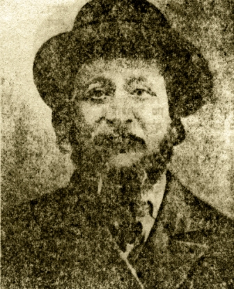

העיירה טריסק ( ביידיש) טוריסק (באוקראינית) טוז'יסק (בפולנית) שוכנת במחוז ווהלין השתייכה בין שתי מלחמות העולם לפולין, היום אוקראינה. מיקומה על גדות הנהר טוריה,יובל הנהר 'פריפטש'. בין העיר קובל לבין העיר לודמיר. (ולדימיר ווהלינסק העיר קיימת מסוף המאה ה-11.) מרשומות רשמיים ידוע כי בשנת1097 נדרשו תושביה ע'י הנסיכים וולודר וואסילקה להסגיר את האשמים בגרימת עיוורון לנסיך וואסילקה. בשנת 1205 כבשו את העיירה הליטאים. בשנת 1515 העניק המלך זיגיסמונד הראשון את טריסק לנסיך טנגושקה. בשנת 1759 העניק המלך אוגוסט ה-3 לטריסק זכויות חוקת מגדבורג. במאה ה-16 נבנו במרכז העיירה כנסיות- קתולית ופרבוסלאבית באותה מאה נבנה בית הכנסת היהודי הגדול . לפי ארכיון מפקד האוכלוסין משנת 1765 חיו בטריסק 874 יהודים. בשנת 1847 חיו בעיר 1062 יהודים בשנת 1897 חיו בעיר 2938 תושבים מהם כ-2000 יהודים בין שתי מלחמות העולם חיו בטריסק מעל 5000 יהודים. על אי – גבעה בהסתעפות נהר 'הטוריה' נמצאות חורבות גדולות של מבצר עתיק. דרך צרה הובילה מהעיירה עד לנהר שם עדייו נותרו שרידי גשר מתרומם. בשנת 1890 מצאו במרתפי המבצר אוצר גדול של מטבעות זהב. במרחק קטן מהעיירה תחנת רכבת מקייב ללודמיר. בעיירה היו: בית חרושת לפרוות, ביח'ר ללבנים, שלושה בתי ספר עממיים בי'ס תיכון,בית תרבות,ספריה. המקור: האנציקלופדיה היהודית ברוסית,בהוצאת ל. כצנלסון 1908 מקורות נוספים: האנציקלופדיה הגדולה הסובייטית,מוסקבה 1956 . המילון האנציקלופדי(רוסית) בהוצאת ברוקהאוז והאן ס. פטרבורג 1902 .
מפות של מחוז ווהלין


תולדות העיירה
מאז היווסדה הייתה טריסק עיירה יהודית. תושביה שומרי מסורת אדוקים. רישומים בארכיונים מצביעים על חיי קהילה פעילה ומוסדות קהילתיים מסודרים.
נוסדה על ידי עדת יהודים ב-1094 וכבר מתחילת המאה ה-12 הוקם בה בית- קברות יהודי ששרידיו נמצאו בתחילת המאה ה -20 .
ביער סמוך, נצפו באתר ראשי מאות מצבות מעל פני הקרקע (אדמת סחף). בקרב האוכלוסייה המקומית רווחו אמונות על שדים ורוחות ששוכנים במקום ולא העיזו להתקרב לאזור.
לא כן סברו בני נוער יהודיים (מהשומר הצעיר)בשנות ה30. בהיותם במחנה קיץ ביער באזור, העזו לגרוף את האדמה מסביב למספר מצבות ולעיניהם נגלו כתובות בעברית ותאריכים משנות המאה ה-12, תבליטי שופרות ושיירי פסוקים "אכולים." מעשה זה נשמר בסוד, מפחד אנשי הקהילה האדוקים. מאות שנים קימה הקהילה את תפילותיה בחדרי תפילה ארעיים. היו סידורי "עזרה הדדית," "חברה קדישא" וחדרים ללימוד תורה ותפילה. ושוב אנו מוצאים בכתובים עדות לפניית אנשי הקהילה לנסיך של 'קייב' בבקשה להרשות בניית בית-כנסת מרכזי, בתמורה לתשלום 22 ככרות זהב.
אכן יהודי טריסק מאמינים ואדוקים היו, אך כנראה גם אמידים. ובפנקס הקהילה של טריסק, העתיק והענק, סופר: "כאשר נאספו המעות, הוחל בבניה. היסודות נבנו מלבנים שרופות בעומק , מעל ארבע עשרה אמות באדמה. רוחבם אחד עשרה אמות.
עם תום בנית היסודות, הוזמן הפריץ, בעל האדמות, לחנוך אותם, בנוכחות כל יהודי העיירה , הוא הגיע בכרכרה רתומה לארבעה סוסים אבירים, עלה על היסודות ועשה שבעה סיבובים עליהם. כך ניתן האישור להמשך הבנייה" .
זהו דבר המעשה, כפי שנכתב בכתב יד בפנקס הקהילה הקדושה טריסק, שהיה שמור בארונו של אבי, ששימש ראש קהילה ונבחר לתפקיד שלוש פעמים.
האזור נכבש פעמים רבות על ידי צבאות וכנופיות שונים. חלק מבתיה חרבו, רבים מיהודיה נפגעו,אך תמיד חזרו ובנו מחדש. ואז באו ימי "תחום המושב". איסור מוחלט ליהודים לעזוב את האזור, כלכלות אזורי תחום המושב במערב רוסיה ואוקראינה נפגעו קשות, נפגעה גם כול האוכלוסייה.
האנטישמיות גברה, פרעות ושחיטות היו תופעה קבועה באזור. אמונות "משיחיות " שונות נפוצו בקרב היהודים. קמה והתפתחה התנועה החסידית. התגברה האמונה, החרדות נפוצה.
גם על טריסק לא פסח המשבר הכלכלי. בתחילת המאה ה18 הגיע לעיירה רבי אברהם טברסקי, אחד משמונת בניו של רבי מוטל'ה מצ'רנוביל, וקבע את מושבו ומקום חצרו בטריסק. בניית ה"חצר" הפכה את טריסק למרכז חסידי גדול. עשרות אלפי חסידים מכל רחבי אוקראינה נהרו והפיחו בעירה חיים ופרנסה.
יחד עם זאת גדלה מאד ההתחרדות ונמנעה חדירת רעיונות ודעות מודרניות, לקראת המחצית השנייה של המאה ה-19 עם יציאתם של צעירים מטריסק ללימודים בישיבות בערים הגדולות יותר, הורגש שינוי באווירה. רוח ההשכלה חדרה לישיבות הגדולות ,ואף צעירי טריסק נדבקו בה. אחדים הצטרפו בסתר לחוגים של"חובבי ציון" ובשובם לעיירה עשו נפשות לרעיון בקרב צעירי העיירה. לא קלה הייתה דרכם של צעירים אלה. עד מהרה רבו חובבי ציון בקרב הצעירים, קשה היה להסתיר את הפעילות השקטה.
בסוף המאה ה-19 ותחילת המאה ה-20 החלה התארגנות ציונית בין הצעירים ואף פדו את השקל, לקראת הקונגרס הציוני.
חרף ההתנגדות העזה הוקם "חידר" מודרני בו לימדו, חוץ מתורה ותפילה, גם מתמטיקה, יידיש ועברית.
במלחמת העולם הראשונה נכבשה טריסק בידי הגרמנים. זמנים קשים פקדו את התושבים היהודיים, הכלכלה נפגעה קשה, רבים הגיעו לחרפת רעב. הרבי מטריסק וכל אנשי חצרו עזבו את העיירה מזרחה.
עם תחילת המאה העשרים חזרו מספר בחורי ישיבה לעיירה חדורי רעיונות חדשים.
ריכזו סביבם עשרות צעירים וצעירות וקיימו פעילות כדוגמת 'חובבי ציון' בערים הגדולות. התקיימו הרצאות ודיונים, הובאו בחשאי ספרים בעברית וביידיש ובסוף המלחמה הקימו בית-ספר שעברית ויידיש שמשו בו כשפות הלימוד. עם תחילת השלטון הפולני, בשנות העשרים הראשונות, חברו והקימו ספריה, רוב ספריה ביידיש נאספו מכל בתי העיירה. החלה "החלפת ספרים" שגרתית והוקמו ועדים שריכזו את הפעילות.
בשנים הראשונות, נתקלה פעילות זו בהתנגדות חריפה של החלק החרדי בעיירה, שנקט צעדים להפסקתה.
להרחבת הפעילות הציונית תרמה החלטת התנועה החלוצית להקים "קבוצת הכשרה" בקרבת טריסק שעסקה בעיקר בכריתת יערות בסביבה ועבודה במנסרות. בהשפעת הפעילות הזו ובהשפעת הידיעות על הגנת "תל-חי" נוסדה תנועת "השומר- טרומפלדור." חבריה התחברו לקבוצת ההכשרה וקיימו פעילות ציונית נמרצת.
עד מהרה הוקמה תנועת בוגרים "החלוץ", התחילה פעילות ציונית ענפה. חברי החלוץ יצאו להכשרה לעיירה קלוסובה, שם הועסקו בחציבת אבן בזלת במחצבה, שבעליה היהודי הסכים להעסיק חלוצים בצד אסירי שלטון. העבודה, הייתה קשה ביותר וזרה לצעירי העיירה בכלל, ולצעירים יהודיים בפרט. לראשונה ובאופן חריג, הצטרפו בנות מהעיירה להכשרה, זאת בניגוד לדעת הוריהן ודעת הקהל בעיירה.
במחצבה אף קרו אסונות ואנשי הכשרה אחדים נספו. עובדה זו לא ריפתה את ידם, קלוסובה הפכה לסמל ההחלטיות של אנשי החלוץ ולחתירתם העקשנית לעליה.
כדי להעמיק את התודעה הציונית והחינוך לציון, הוחלט להפסיק בבית-הספר את לימוד היידיש ולהצטרף לרשת בתי ספר "תרבות." כתגובה לכך פרשו חלק מהמורים והפעילים והקימו בית-ספר מתחרה, ששפת ההוראה שלו יידיש. בעקבות כך החליטו הציונים להקים ספריה עברית, ספרים רבים נאספו מהבתים, אך נדרשה פעילות נמרצת לגיוס מימון לרכישת ספרים בחוץ. במסירות אין קץ נאספו הכספים, הוקם ועד ספריה. והיא החלה לפעול.
גאווה גדולה הפיחה הספרייה בקרב הציונים בעיירה, והם טיפחוה והרחיבוה כל השנים.
זכתה טריסק וראשוני החלוצים התכוננו לעליה ארצה.
כולם התגייסו לעזור לממש את העלייה. לא לכולם היו האמצעים לכך ונעשתה פעילות רבה לקבץ את הסכום הדרוש. וביום צאת הראשונים לדרך ליוו אותם לרכבת מאות חברים ואוהדים ואף ילדי הכתות הגבוהות. יום חג היה בעיירה.
הקמת קן השומר הצעיר בטריסק והשפעתו על חיי העיירה והנוער במיוחד.
אחדים מבין בוגרי בית-הספר "תרבות" יצאו להמשך לימודיהם בגימנסיה "תרבות" בעיר הסמוכה "קובל".שם הושפעו מהרעיונות של תנועות הנוער הציוני הצטרפו ונעשו פעילים בתנועת "השומר הצעיר".
בשנת 1927 נוסדה התנועה בטריסק ונסמכה על כיתות בית הספר תרבות. בעזרת הנהגת קן השומר הצעיר מ"קובל".
הגימנזיסטים קיימו סמינר לבוגרי הקן להכשירם כמדריכים לשכבות הצעירות. נעשתה פעילות ענפה לאיסוף כספים למעון לקן, והוא היה לבית גם לסניף "החלוץ".
הייתה פעילות חינוכית תנועתית בהדרכת ההנהגה המחוזית והראשית בוורשה.
הקן חולק לשכבות גיל שונות(לעיתים חפפו את הכיתות בבית הספר "תרבות").אחרי שעות הלימודים התקיימו פעילויות חינוכיות-תרבותיות בקבוצות ובשכבות ובימי חג ומועד לאומיים או מסורתיים פעולות משותפות לכל בני הקן. .
הפעילות החינוכית תרבותית בקן נעשתה לפי תוכנית מוכנה והותאמה לכל שכבת גיל.
התקיימו דיונים בנושאים אקטואליים ובנושאים היסטוריים לאומיים נערכו "משפטים ציבוריים" אשר ריכזו וריתקו את מרבית הנוער בעיירה ולעיתים הגיעו גם לא מעט מבוגרים הורי החניכים. התקיימו סמינרים רעיוניים אזוריים בהם השתתפו רבים מהחניכים.
עבודה רבה נעשתה בקרב הורי החניכים, שכולם מסורתיים ולעיתים דתיים מאד, לשכנע אותם לאפשר לבנות ולבנים לצאת לאזור רחוק, בנות יחד עם בנים, לכנסים וסמינרים, אף כי הקבוצות החינוכיות היו נפרדות לבנים ובנות. הקן הפך לבית שני לחניכים ומסירותם לפעילות לא ידעה גבול.
לא פעם גרם הדבר לחיכוכים עם הורים, אך רובם העריכו ואף תמכו בפעילות התנועה..
מספר פעמים בשנה הוכנו הצגות תיאטרון שזכו לאולמות מלאים.
לעיתים קרובות הוזמנו מרצים מחוץ לעיירה , סופרים או אנשי תרבות או פוליטיקאים, אשר רכזו המונים להרצאה ודיון.
הקן שחינך את חניכיו "להגשמה עצמית" בגר וראשוני בוגריו, שהיוו את עמוד השדרה הניהולי והחינוכי בקן, החליטו לצאת להכשרה!
נערכו חילופי משמרות והשכבה הבוגרת אחריה, קבלה את ההדרכה וניהול הקן. השכבות הצעירות לא השלימו עם צאת המדריכים האהובים להכשרה. אך קבלו את צו התנועה. אחרי חלוצי קלוסובה, הייתה זו הקבוצה השנייה מהעיירה שיצאה להכשרה והקימה את קבוץ ההכשרה "עמל" בעיר התעשייה ביאליסטוק. התחילו הכנות לעליה. ובארץ הקימו את קבוץ "רוחמה" בנגב!
כעבור שנה גם שכבת המדריכים החלה בהכנות ליציאה להכשרה. התקיים כנוס מייסד אזורי, בו השתתפו מאות ובו הוקם גרעין ההכשרה בשם "הזרם".
בסוף 1938 יצאו ראשוני הגרעין לביאליסטוק והחלו בתהליך ההכשרה וההכנה לעליה. בתחילת 1939 עלו ראשוני הקבוץ לארץ ולימים הקימו את קבוץ "המעפיל" בעמק חפר. שמי אירופה קדרו מאד, ושכבת בוגרים חדשה החלה בהכנות ליציאה להכשרה, נערך כנס יסוד אזורי והוכרז על הקמת גרעין הכשרה שלישי בשם "הכובש".
באמצע הקיץ יצאו ראשוני הגרעין לביאליסטוק ויסדו את הקבוץ. לא העיר המזל לקבוץ הכובש, הנאצים פתחו במלחמה להשמדתה של פולין, ובהסכם עם רוסיה הסובייטית נחלקה פולין ביניהם.
התנועה יעצה לבוגריה לנוע לאזור שנתפס בידי הסובייטים, והמוני בוגרי השוה'צ יצאו לאזור. טריסק זכתה להפתעה מצילת חיים, הצבא האדום נכנס לעיירה ביום של ערב יום הכיפורים. וגרם ליהודים לנשום לרווחה.
אך לא זמן רב ארכו הימים הטובים, השלטונות הסובייטיים פקדו לסגור את בית ספר "תרבות" ה"אנטי סובייטי",בעקבותיו נעלו את שערי הספרייה העברית "כריאקציונית" הציונים הוזהרו 'הצעירים נקראו להצטרף לתנועת ה"קומסומול" חלק מהם עזבו בתיהם מחשש להיעצר.
התחילה פעולה להצלת ספרים עבריים, התנועה באזור הסובייטי התארגנה במחתרת, אחרי זמן קצר יעצה התנועה לבוגריה לנוע לכיוון הגבול החדש של רוסיה-ליטא, בתקווה שמשם אולי תתאפשר עליה. גם חלק מבוגרי הקן בטריסק (תשעה במספר) יצאו בחשאי לכיוון וילנה שבליטא. כולם זכו להגיע לארץ ישראל. עם הכיבוש הנאצי של טריסק ביוני 1942 הוכנעו יהודיה ולא יכלו לשרוד!
הקיץ הקץ על העיירה ועל יהודי טריסק, על תרבותם על מפעליהם ועל הנוער הנפלא שבה.
חיי הקהילה
העיירה טריסק נוסדה עי' יהודים בשנת 1094 ' על גדות הנהר טוריה. תושביה שברובם יהודים היו, עסקו בביעור היערות ותעשיית העץ.
הקהילה גדלה מאד, לימים נמצא בית- קברות עתיק ובו מצבות מהמאה ה-12. לפי מקורות ארכיונים נכבשה טריסק בידי חמש מדינות מהאזור, נהרסה בחלקה, אך היהודים המשיכו לפתח את המסחר והמלאכה והתעשייה.
במאה ה-16 התבססה הקהילה, נבנה בית- הכנסת הגדול, אך אז באו חוקי "תחום המושב", כלכלת האזור נפגעה באופן קשה מאד ופגעה באוכלוסיה היהודית, גדל העוני, גדלה האנטישמיות. פרעות ביהודים היו לתופעה נפוצה, גם על טריסק לא פסח המשבר.
בקרב היהודים נפוצו אמונות משיחיות, המצוקה גרמה לכך שקמו נביאי שקר, קמה והתפתחה התנועה החסידית, רבים נהו אחרי הרבנים.
בתחילת המאה ה-18 היגיע לעיירה רבי אברהם טברסקי, מחסידות צ'רנוביל שקבע את טריסק למקום מושבו והקים בה את חצרו החסידית. בניית החצר הגדולה הביאה פרנסה לרבים מיהודי טריסק. מכול רחבי אוקראינה ופולין נהרו חסידים לפתחו.
תלמיד חכם היה ופרשן ידוע. ספרו "מגן אברהם" היה לספר לימוד בישיבות ובתי המדרש ומשמש עד היום! בתחילת המאה ה-19 חדרה רוח ההשכלה לעיירה, זאת בזכות נערים מהעיירה שיצאו ללמוד בישיבות בערים הגדולות.
בשובם ריכזו סביבם צעירים רבים, והקימו חוגים ציוניים. בתחילת מלחמת העולם הראשונה כבש הצבא הגרמני את העיירה. טריסק הייתה סגורה, כלכלתה נפגעה, רבים הגיעו לסף רעב. הרבי וכל אנשי חצרו עזבו מזרחה. כאמור צעירים רבים נהו אחרי הרעיון הציוני וההשכלה. הוקם "חדר" מודרני בו לימדו בו לימדו גם שפת עברית ויידיש.
הוקמה ספריה עברית שרוב ספריה נאספו מבתי החברים. לקראת סוף הוקם בית ספר יהודי פרטי בו שפת ההוראה היו עברית ויידיש וגם מתמטיקה. הייתה התנגדות רבה בקרב האורתודוקסים ,אך למרות זאת ההתקדמות נמשכה!
זמן קצר אחר כך צרפו מורים ציוניים את בית-הספר לרשת "תרבות" ששפת ההוראה בו רק עברית. כתגובה לכך פרשו מספר מורים בראשותו של הסופר לייב אוליצקי והקימו בית ספר ששפת ההוראה בו יידיש.
העיירה התפלגה לשני מחנות עיקריים: ציונים ובונדיסטים. בעיירה הוקם סניף "השומר" ובעקבותיו סניף החלוץ. הבוגרים מבין הצעירים יצאו להכשרה במחצבות האבן בקלוסובה.
נקודת הכשרה הוקמה, במנסרת עצים על יד העיירה, והשפעתה על הצעירים רבה מאד. התחילו להתכונן לעליה לארץ ישראל. במקביל הצטרף בית הספר ביידיש לרשת בתי הספר של ה בונד. צישא". מלחמה אידיאולוגית חריפה התנהלה ביו שני המחנות. יש לציין ולהדגיש , בית הספר ששפת ההוראה בו יידיש היה הראשון שהוקם בין כול 44 הערים והעיירות היהודיות בווהלין. השפעתו רבתה גם בעיירות שכנות, בוגריו בין הסופרים והמשוררים בשפת היידיש הבולטים, שיצאו שיצאו לערים הגדולות בפולין ואמריקה. בשנת 1927 הוקמה בטריסק תנועת נוער "השומר הצעיר". מייסדיה היו תלמידי הגמנסיה העברית בקובל הסמוכה. בוגריה יצאו לקיבוצי ההכשרה בעיר ביאליסטוק והתחילו לעלות ארצה. הקן התבסס על הכיתות הגבוהות בבית הספר"תרבות". בוגרי הקן נענו לצו ההגשמה העצמית. אחדים נקראו לפעילות של ההנהגה הראשית. אחד מהם, ישעיהו - שייקה ויינר, אף היה בין ראשי התנועה בפולין בשנת 1939. שייקה נבחר כציר מטעם התנועה לקונגרס, שהתכנס בבזל-שווייץ, ימים אחדים לפני פרוץ מלחמת העולם השנייה. טריסק היהודית התפרסמה בזכות מספר כמה אישים וארועים:
- בתחילת המאה ה-18 חי ופעל בה הרופא דר" משה מרקוזי, אידיאליסט, איש ההשכלה, בהתנדבות לטובת ולעזרת דלת- העם ,טיפל בהם, ובמשך עשרות שנים ערך מחקר מדעי על בריאות , היגיינה ומחלות שלהם. בשנת 1770 פרסם ספר רפואה, לשימוש להמונים, ביידיש, הראשון מסוגו והיחיד עד היום.!
- בתחילת המאה ה-18 הקים בה רבי אברהמ'לה טברסקי את החצר החסידית והשושלת החסידית של טריסק פרחה ושמה יצא לתהילה ברחבי אוקראינה ופולין, אף לארצות חוץ.
- חלקם שרדו את מלחמת העולם השנייה ופעילים עד היום. גם בירושלים.
- קרקע העיירה הקטנה טריסק הצמיחה מקרבה עשרה יוצרים, סופרים ומשוררים ידועי שם בכל העולם היהודי.
- שניים מבניה הגיעו לרמה של מנהיגים בתנועותיהם: השומר הצעיר, והבונד. ישעיהו ויינר (שייקה) בהנהגת השוה'צ ,היה ממובילי העלייה לפני המלחמה ואחריה. היה ציר השוה'צ לקונגרס הציוני 1939.
- ליבר ברנר, ממנהיגי הבונד באזורינו, ממנהיגי מרד גיטו צנסטוכובה, ששרד, ופרסם מחקר בנושא: "ההתחרות" התרבותית האידיאולוגית בין שני המחנות שהעלתה את רמתה של טריסק בעיני יהודי האזור.
אודות חיי הקהילה היהודית בטריסק
מאז ייסודה בשנת 1097 עד שנת השמדתה בשנת 1942 היהודים הקימו ופיתחו את העיירה. היערות סביבה נעקרו, מנסרות רבות הוקמו ויצרו מוצרי בנייה וקורות לתעשייה שהושטו בשיירות של רפסודות אין קץ בנהר 'טוריה' עד לנמלי הים והתעשייה. התעשייה והמסחר פרחו.
אומנים ועובדים יהודים הקימו בתי מלאכה מכל הסוגים. האוכלוסייה היהודית גדלה מאד. באמצע המאה ה16 נבנה בית כנסת גדול וישיבה על ידו. חיי הדת והתרבות שגשגו. טריסק נכבשה מספר פעמים על ידי כובשים שונים, חלקים גדולים נהרסו וניבנו מחדש. היהודים סבלו מנגישות ואבידות רבות, אך תמיד חזרו לבנות מחדש..
בתחילת המאה ה-18 הפכה טריסק למרכז חסידי חשוב, כאשר רבי אברהם טברסקי בנו של המגיד מרדכי מצ'רנוביל הפך את טריסק למרכז שלו. מאז ועד להתחלת המאה ה-20 הרבנים מטריסק התפרסמו בכל פולין ואיזור המזרח! קמו לחצר מאות אלפי מעריצים במאות עיירות וערים ואף לאמריקה הרחוקה הגיעו. מידי שנה, ביום הזיכרון לזכרו של אברהמל'ה המגיד מטריסק, אלפים רבים של חסידים ובראשם האדמו"רים היו ממלאים את העיירה על גדותיה. מבקשי עזרה והחלמה ממחלות ,בהאמינם בכוחותיו "האל טבעיים" של המגיד.
גלי ההשכלה של המאה ה-19 שטפו את העיירה בימי סוף המאה. ליד ה'חדר' המודרני הוקם בית ספר עברי, וספריה בשפות יידיש ועברית. קבוצת צעירים הקימו תנועת נוער ציונית, וגבר חלומם לעלות לארץ ישראל.
צעירים רבים החלו בלימודים גבוהים, תוך זמן קצר הוברר שמצויים ביניהם בעלי כישרונות בתחומי התרבות והספרות. יצירותיהם פורסמו בירחונים ספרותיים ביידיש ובעברית. אחדים התפרסמו בעולם היהודי. בזמן מלחמת העולם הראשונה נכבשה טריסק בידי הצבא הגרמני וסבל רב נגרם לתושביה היהודיים בגלל המצב הכלכלי הקשה. בפעולות מלחמתיות נשרפה החצר הענקית של הרבי כליל.
הוא היה אחרון השושלת של המגיד שחצרו היתה בטריסק, ולא נבנתה מחדש יותר! עם סיום המלחמה צורפה מערב אוקראינה וטריסק בתוכה, לפולין. קשה הייתה התאוששות הקהילה מכל המכות שהוכתה בהן ומהן סבלה, אך חיי החברה, התרבות והחיים הפוליטיים הלכו והתפתחו. אנשי הבונד בעיירה הקימו בית ספר נפרד אשר שפת הלימוד בו יידיש בכל הכיתות. היה זה בית הספר הראשון מסוגו וכמעט היחיד בכל ערי ועיירות היהודיות בפולין המזרחית 44 במספר. (אוקראינה) יש לציין : בטריסק נולדו, צמחו ויצרו תשעה סופרים ומשוררים בשפות יידיש ועברית, רובם צמחו והיו לבעלי שעור קומה ספרותיים בעולם הספרות היהודי והכללי. צעירי תנועות הנוער השומר הצעיר והבונד היו מודעים לסכנות של פוגרומים מצד אוכלוסיית הפרוורים והכפרים האוקראיניים. מרכזי התנועות בפולין קיימו אימוני נשק חשאיים, כהכנה להתמודדות עם הפורעים ובתנועת השוה"צ גם כהכנה לעליה לארץ ישראל.
טריסק בימי שלוט הפולנים לא התאוששה כלכלית. רוב תושביה שיהודים היו, התקשו להרוויח למחייתם ורבים חיפשו דרכים להגירה. בסיסה החברתי התרבותי והחינוכי האיתן, מנעו ייאוש, הפעילות האקטיבית נמשכה בכל המחנות. תנועות השוה"צ ,החלוץ והציונים בכלל פעלו להגירתם לארץ ישראל של חבריהם ובני משפחתם.
אנשי הבונד , המפלגה הקומוניסטית במחתרת, ואנשי הרבנות האורתודוקסית פעלו למניעת יציאתם של צעירים מפולין, מתוך אמונתם באחווה בין העמים מחד וצפייה לבוא המשיח מצד אנשי הדת.
כזה היה המצב עם פרוץ מלחמת העולם השנייה. כתוצאה מהסכם גרמניה - רוסיה הסובייטית, נכבשה מערב פולין בידי גרמניה ומזרחה בידי ברית המועצות. זמן קצר בלבד היו יהודי מזרח פולין אזרחי ברית המועצות, אך על פעילות הציונים הוטל איסור. חלק מפעילי הנהגת התנועה נאסרו או היו צפויים למאסר, חלק קטן של האקטיבה התנועתית הצליחה להימלט לליטא החופשית,ומשם המשיכו במאמצים לעלות ארצה. רק למעטים בלבד הצליח המאמץ.
כאשר תקפה גרמניה את ברית המועצות ב-22 ביוני 1941 לא רבים הצליחו להימלט לרוסיה בעקבות נסיגתו של הצבא האדום, רובם שרדו את המלחמה ברוסיה. תוך שני ימי לחימה כבשו הגרמנים את טריסק. כבר באותו יום החלו בהתעללויות והוצאות להורג. האוכלוסייה היהודית נדחסה בחלק קטן מבתי העיירה,עשרה אנשים בחדר, בלי אפשרות כלשהי לשכב או לישון, בתנאים סניטריים חמורים ביותר! החלו בהוצאת גזירות .
גזירה רדפה גזירה בלי אפשרות לעקוב. היהודים אולצו להקים ועד אשר יהיה אחראי על ביצוע הגזרות, גיוס אנשים לעבודות פרך מחוץ לגטו, וכל יום פחת מספר החוזרים לגטו, איש לא ידע מה גורלם? החרמת רכוש מכל הסוגים: פרוות ובגדים חמים לצבא הגרמני בחזית, איסוף קילוגרמים רבים של כלי זהב וכסף, באיום שאי-מלוי המכסה יגרום להוצאתם להורג של עשרות תושבים. אחרי שנה וחצי של התעללויות והרג רעב והשפלות, היגיע היום מפניו חרדו. כל תושבי הגטו נצטוו להתאסף בבית הכנסת הגדול ועל המגרש הענק מסביבו. המיליציה האוקראינית ירתה בלי הבחנה כדי לאלץ את ההמון להתחיל בצעידה ברחובה הראשי של העירה לכיוון בורות הענק של כריית החומר לבית החרושת ללבנים. כל הדרך התעללו וירו בהם.
כאשר הגיעו לבור נצטוו להתפשט על שפת הבורות, שם ירו בהם והם נפלו לבורות. את ההרג ביצעה המיליציה האוקראינית בפיקוח מספר קצינים גרמניים. כל היום נמשך ההרג עד הערב.
המוני אוקראינים מהכפרים בסביבה נהרו לגטו הריק במטרה לבזוז את הרכוש שהשאירו היהודים. עדי ראייה סיפרו: "בבתי הגטו הסתתרו מספר לא ידוע של צעירים שפתחו באש על המוני הפורעים, רבים נפגעו, הם נסו והזעיקו את המיליציה האוקראינית. כאשר אנשי המיליציה החלו לתקוף את הבתים מהם ירו, פרצה לפתע אש בהרבה בתים, המבנים שרובם בתי עץ היו, עלו בלהבות ותוך זמן קצר עלתה כול העיירה באש. כול העיירה נשרפה עד היסוד, רק כבישי הרחובות נשארו... זה היה סופה של טוריסק בת כמעט 900 שנה. רק שמוליק בוימל בן ה-13 שרד . כאשר התקרב עם אימו ואחיותיו ערומים לבור, שניות לפני הירי, דחפה אותו אימו בצעקה, ברח שמואילקל ברח! הוא נפל ליד הבור וראה את אימו ואחיותיו נורות לתוך הבור.
כאשר התעורר שרר חושך, מצא ערימת בגדים וברח למקום האפל ביותר ליער. הישרדותו של שמואליק הוא סיפור לא ייאמן! כאשר הסתימה המלחמה הוא פגש נערה צעירה שאף היא שרדה בנס את השחיטה בעיירה שלה. הם נישאו ואחרי תלאות היגרו לארה'ב. הם פתחו עסק, והקימו משפחה יהודית נהדרת. בעבודה קשה של שנים נהיה אדם אמיד ובעל יכולת, אך אף פעם לא שכח מוצאו. עם חלוף הזמן היו לאחת ממשפחות התורמים הגדולים למדינת ישראל ולקהילה בארה'ב. אנו יוצאי טריסק בישראל לא היינו מודעים לכך.
בשנת 1992 כאשר גורבצ'וב עלה לשלטון ברוסיה, אספנו, אנו יוצאי טריסק בישראל כסף כדי להקים מצבה על קבר ההמונים בטריסק. כאשר באנו למקום נדהמנו לראות את מצבו של הקבר והחלטנו לפעול בקשר לכך. שמועות שהתהלכו בקרב האוקראינים סיפרו על נער יהודי שברח מהבור, ניצל, היגיע לארה'ב והיום הוא בעל יכולת. בשובנו לישראל בדקנו את נכונות השמועה. הוברר שאכן נכון הדבר, פנינו למר סם בוימל וסיפרנו לו על מה שראו עינינו. בעזרתם של שני אחים יהודים מהאזור הוכנה תכנית. מר סם בוימל תרם את הסכום הדרוש והפרויקט יצא לדרך.
כעבור מספר חודשים הושלמה המלאכה. יצאנו 12 ישראלים אבות יוצאי טריסק עם בניהם ובנותיהם. מארה'ב הצטרפו הזוג בוימל עם בנם, ובני משפחה נוספים. נערך טכס גילוי הלוט.
היה ביקור מאד טעון וקשה בעיקר למר סם בוימל. בזמן הסיור שוחחנו רבות על בעייתיות של הביקורים על יד הקבר. הועלה רעיון של הקמת אתר זיכרון לעיירה בישראל, מקום אליו יוכלו להגיע בקלות בנים ובני בנים של יוצאי העיירה וללמוד להכיר את השורשים והמקורות מהם באו.
ללמוד על העיירה, יהודיה, תרבותה, חיי החברה שלהם וכו'. בשובנו לישראל נודע לנו על פרוייקט חדש שמורשת מקימה. מוזיאון על שם מרדכי אנילייביץ מרכז לחקר ולהנצחת המרד בגיטאות . תצוגות הקבע ינציחו את פעולותיהן של תנועות הנוער היהודיות בזמן השואה, יחקרו ויונצחו השורשים מהם צמחו ומהן ינקו, ממאות העיירות והערים בהם חיו קהילות יהודיות במשך מאות שנים.
עיירתנו טריסק וההיסטוריה המיוחדת שלה, בת כ-900 שנה נבחרה כסמל העירות. סמל חשוב, לחיי הקהילות, הדת, התרבות והיצירתיות של מייסדיה היהודים. ייחודה של טריסק בולטת בקרב עיירות פולין , אוקראינה, שהיו הקרקע והמקור מהם צמחו וגדלו יוזמי ומוליכי ההתנגדות והמרד בגיטאות. סם בוימל הרים תרומה מרכזית , אליה הצטרפו אחרים.
הבניין מוכן, כעת אנו פועלים למלא את המבנה בתוכן מתאים. אנו פונים לכל ייוצאי טריסק וצאצאיהם לעזור לסיים את מלאכת הקמת הפרוייקט, שחשיבותו רבה מאד לנו ולדורות הבאים.
השושלת החסידית של טריסק
 השורש ומקור השושלת החסידית של טריסק, בחסידות הצ'רנובילית המכובדת .
רבי מרדכי,המכונה בחיבה , רבי מוטל'ה, בנו של מיסד השושלת המגיד ר' נחום
מצ'רנוביל העלה מאד את קרנה של השושלת, בימיו היא פרחה. עשרות אלפי
חסידים מרוסיה ואוקראינה, נהרו לצ'רנוביל לשמוע אותו ולקבל בירכתו.
כך קמה שושלת משפחת טברסקי.
השורש ומקור השושלת החסידית של טריסק, בחסידות הצ'רנובילית המכובדת .
רבי מרדכי,המכונה בחיבה , רבי מוטל'ה, בנו של מיסד השושלת המגיד ר' נחום
מצ'רנוביל העלה מאד את קרנה של השושלת, בימיו היא פרחה. עשרות אלפי
חסידים מרוסיה ואוקראינה, נהרו לצ'רנוביל לשמוע אותו ולקבל בירכתו.
כך קמה שושלת משפחת טברסקי.
לרבי מוטל'ה נולדו שמונה בנים. כאשר ניפטר, חילקו ביניהם בניו את כל פלך קייב ופלך ווהלין. כל אחד מהם הקים חצר חסידית ומשל בה. באזור טריסק זכה ר' אברהמל'ה.לימים, המגיד מטריסק. מבין הערים הגדולות יותר שבקרבתה,קובל, לודמיר ומצ'ייב, בחר בטריסק השוכנת במרכזן.על גדות הנהר טוריה. עד מהרה הוקמה החצר, שהשתרעה על שטח גדול מנהר טוריה עד לעיירה ועד לגדרות הכנסיה הפרבוסלבית, נבנו בנינים למגורים, בית כנסת גדול,אורוות לסוסים, ר' אברהם כונה, המגיד מטריסק, כתב ופרסם ספר תורותיו,"מגן אברהם". ר' אברהמל'ה טברסקי המגיד מטריסק,1770-1837. את כסאו ירש יעקב ליבניו הצעיר בשלושת בניו. הוא היה עילוי וגדול בתורה. עליו סופר שבצעירותו,ביקש להתחבר עם רוח הנבואה כשהוא הוגה בתורה יום וליל, במשך אלף יממות רצופות,ןתעניות של חדשים רבים. לו קראו, הרבי מטריסק.התחתן עם אישה משושלת רביים ידועה. אלפי חסידים מכל רחבי ווהלין ואוקראינה נהו אחריו. על קברו הוקם מבנה לבנים גדול, לקליטת המוני החסידים.
מנהג השתרש בחסידות טריסק: ביום פטירתו של המגיד,מתקבצים בעיירה אלפי חסידים מכל רחבי המדינה,לאזכרה. חג היה בעיירה. התעוררות דתית, ופרנסה נוספת לאנשי טריסק. כל השירותים לרווחת החסידים שמרחוק באו להשתטח על קבר המגיד, להתפלל עם הרבי מטריסק, ולשלשל בקשה כתובה לתוך תיבת הענק במבנה האוהל הענק שעל קברו. בניו האחרים של המגיד,בחרו לעבור למקומות אחרים,להקים חצרות טריסק. רבי דויד אהרל'ה בחר להתמקם בעיירה קטנה ז'וריק. חצרו פרחה בזכות השם- הטריסקער רבי מז'וריק. או בקיצור הטריסקער מז'וריק.
 רבי משה'לי משתקע בעיר הגדולה-לובלין ומקים חצרו החסידית בה. גם הוא זכה לכבוד גדול. שם בעיר הירידים הגדולה,אשר בה גם פעל "ועד ארבע הארצות",מלאה שטיבלאך של חסידים,רבים מהם של חסידי טריסק .חצרו זכתה "לתהילה" רבה. ר' וולוולי עבר לעיר הגדולה הסמוכה קובל,הקים שם "חצר" בית כנסת גדול,ושטיבל" איליו נהרו חסידים רבים,מכל הסביבה,ואף מרחוק.
בזמן מלחמת העולם הראשונה נעזבה החצר של המגיד מטריסק . ויש סברה כי עקב הפעולה המלחמתית נשרפה, כליל. אחרי המלחמה לא חודשה החצר בטריסק. אך המנהג של ביקור בטריסק ביום הזיכרון נשמר. ואלפים היגיעו להשתטח על הקבר כל שנה.
התפתחות השפה ותרבות היידיש בטריסק
יידיש הייתה מאות שנים השפה המדוברת בקרב יהודי מזרח אירופה. (פולין, אוקראינה ורוסיה) יש סברה שכתב היידיש באותיות עבריות החל רק באמצע המאה השמונה עשרה. בטריסק פעל בשנים ההן הרופא דר' משה מרקוזי אשר עשה רבות לשינוי בתחום הרפואה וההיגיינה בקרב יהודי טריסק והסביבה. תוך כדי עבודתו כרופא עסק גם בתחום שיכול להיקרא היום " מחקר רפואי" היה לו קשר אישי טוב, עם השלטונות הפולניים דאז ועם בעל הקרקעות הגדול באזור. אותו נסיך סייע בידי דר' משה מרקוזי להדפיס את ספר הרפואה הראשון מסוגו ביידיש עד היום. היה זה בשנת 1770 . לדעת חוקרים של שפת היידיש, יש לראות ספר זה בין הספרים הראשונים שנדפסו בשפת יידיש באותיות עבריות. עותקים בודדים של ספר זה נמצאים בבית הספרים הלאומי בירושלים ובספרית היידיש באוניברסיטת בר-אילן ברמת גן.
כבר בתחילת -אמצע המאה ה-18 מתחילה להופיע ספרות יידיש מודפסת באזורים המזרחיים של פולין, רוסיה ואוקראינה. עובדות מסוימות מצביעות על כך שגם בטריסק הופצו ונקראו ספרים בשפת יידיש באמצע המאה ה19 . בתחילת המאה ת-20 הקימו צעירים בוגרי ישיבות חידר מודרני בו לימדו גם, בצד לימודים תורניים, מתמטיקה, עברית ויידיש.
בסוף מלחמת העולם הראשונה הוקם, על אפם וחמתם של החרדים, בית ספר יהודי בו שפות הלימוד היו עברית ויידיש. בד בבד חברו צעירי העיירה ויסדו ספריה,שספריה קובצו בבתי העיירה ,ספרי יידיש בעיקר אך גם עברית.
הקמת בית ספר בו שפת הלימוד יידיש (פולנית ולימודים פולניים)
היחסים ההדדיים בין תומכי העברית ותומכי היידיש בבית הספר היהודי הגיעו לידי פרוד עם החלטתם של תומכי העברית לצרף את בית הספר לרשת "תרבות" הציונית. המורה- הסופר לייב אוליצקי והמורים פייקרסקי וברנר,בסיועם של צעירים תומכי יידיש החליטו לפרוש ולהקים בית ספר בו שפת הלימוד-יידיש. לייב אוליצקי נידב לצורך זה את בית משפחת סבו, והצליחו לשכנע חלק מתושבי טריסק ,בעיקר בעלי מלאכה שרבים מאד היו בעיירה, והיידיש היתה מבחינתם "מאמע לשון" תמיכה ועזרה רבה קיבלו גם דווקא ממשפחות אמידות שבניהם נטו רעיונית למפלגת "הבונד". באמצע שנות העשרים צורף בית הספר לרשת בתי ספר "צישא" הארצית בהם שפת הלימוד יידיש. למרות שרוב תלמידיו באו מבתים עניים היו ההורים לשלם מכספם הדל שכר לימוד, שכן כמו ביס' תרבות גם הוא נחשב פרטי ללא תמיכה ממלכתית. למרות קושיים אלה, התפתח בית הספר ופרח. רמת הלימודים בו היתה טובה. יש לציין במיוחד- בית ספר זה היה היחידי בכל עיירות ווהלין (44 עיירות וערים)בו שפת הלימוד היתה יידיש. בוגריו היו ברמה גבוהה ומקרבם יצאו משוררי וסופרי יידיש בעלי שם בעלם היהודי. בית הספר זכה לתמיכה ממפלגת "הבונד" אשר נלחם על כך מול אנשי המפלגה הקומוניסטית במחתרת,אשר לא פעם גרמו בשל כך להתנכלויות מצד השלטונות הפולניים. (עקב חששם מפני הקומוניסטים במחתרת ) עם הזמן יצא הסופר לייב אוליצקי לוורשה והענינים בבית הספר השתבשו. בספטמבר 1939 עם כניסת הצבא הסובייטי לטריסק,באו לו ימים טובים. בית הספר הפך להיות ממלכתי,תכנית הלימודים בוצעה בעיקר ברוסית,אך גם שפת היידיש לא קופחה. בית ספר "תרבות נסגר. לא היו לו מתחרים בקרב הילדים היהודיים. מתחילת שנות העשרים היתה לשפת היידיש בטריסק עדנה. הספריה לספרי יידיש גדלה מאד ,ספרות עולם למכביר תורגמה ליידיש ומלא את מדפי הספריה. פעילות תרבותית ענפה פותחה עם הקמת סניף ל "קולטור ליגע". להקת תיאטרון של חובבים פעלה בתמידות עי' "הקולטור ליגע" הועלו הצגות של יוצרי יידיש ויצירות מתורגמות ליידיש,אשר זכו להצלחה רבה בקרב כל התושבים היהודיים. נגרמה תחרות מופלאה ,כאשר הלהקה הציונית היתה מעלה הצגות של סופרי יידיש מתורגמות לעברית.(שלום עליכם, מנדלי,פרץ) משפטים על נושאים רבים התקימו. והמשפט הספרותי על בונצ'ה שוייג של פרץ הפך ל "אני מאשים" בונדיסטי נגד אלה המורידים ראש ושותקים. ערבי תרבות ושירה רבים התקימו במועדון הגדול של הקולטור ליגע. סופרים ומרצים מבחוץ הופיעו במסגרת ערבים אלה .
חג גדול היה בעיירה עת ביקר בה סופר היידיש הציוני יליד טריסק זוסיע וויינפער. "שניהם אחזו בטלית" ונחת ועליצות לכולם. זוסיע וויינפער סיפר על חוויותיו בגדוד העברי... על הרגשותיו בביקור באירופה וכמעט בכה כאשר דיבר על עתיד יהודי אירופה. כאן הוא הקריא שיר קצר שכתב (אלגורי) על רועה עם מקל שחלם בשמירה על צאנו...ותוצאות הרות אסון...ואף לימד את המנגינה. חזה את האסון ובעצמו לא האמין. רבים היו המרצים החשובים שביקרו בעיירה, ורק מעטים חשו והזהירו. תהפוכות סוף שנות השלושים שזרעו תקווה, הפכו לאסון העם ב1942 . הושמד העם היהודי על תרבות היידיש הנפלאה שלו.ולא היה מציל. לא נעור הרועה עם מקלו.!
החוגים הדרמטיים (תיאטרון החובבים) בטריסק
החוג הדרמטי הציוני נוסד על ידי פעילי בית הספר "תרבות" בוגרי "החלוץ" והשומר הצעיר. הרפרטואר כלל בדרך כלל יצירות ביידיש שכן רוב הקהל לא דבר עברית. (לשמחתם של היידישיסטים) אך מנהלי החוג ראו כחובה מידי פעם להעלות מחזה קצר בעברית, אז צורפו לחוג מורים מבית הספר "תרבות". והורים רבים באו להצגה בליווי ילדיהם שלמדו ב"תרבות". הבמאי הקבוע המנהל והרוח החיה בחוג היה אברהם זילבר. אברהם זילבר נולד בשנת 1907 במשפחת סוחרים אמידה.לאביו זילבר ולדודו מוטיל זילבר היו שני בתי מסחר –חנות מכולת גדולה וחנות חמרי בנין. אברהם יצא ללמוד בישיבות של לובלין ובריסק,עשה חיל בלימודיו ו"נדבק" בלימודים כלליים, ספרות ובעיקר ריאליים- מתמטיקה-פיזיקה. והצטרף לתנועה הציונית בראשית דרכה בעיירה, בשנות העשרים. עם הקמת בית הספר "תרבות" צורף לחבר המורים כמורה למתמטיקה ופיזיקה. הידע והנטייה שלו היו ,ספרות ואמנות. כך קרה שלקח על עצמו את תפקיד הבמאי של החוג הדרמטי שקם על יד ביס' "תרבות". בתפקיד הבמאי ידע לנצל את ידעתו והבנתו הרבה בספרות. הוא למד באופן אקסטרני את נושאי הבמאות והתיאטרון. זמנו היה בידו, שכן לא היה נשוי ולפרנסתו דאג אביו,שפינק אותו אחרי שסטודנטים פורעים פולניים רצחו את אחיו הצעיר. החוג הדרמטי בבימויו של זילבר העלה מחזות של שלום אש(אמונתנו) של אופטושו, שלום עליכם, מנדלי ביידיש ובחלקו גם בעברית. בתפקיד הבמאי הצליח מאד בבמוי, והצגותיו זכו באולמות מלאים ומכל חוגי העיירה. הכיבוש הנאצי השיג גם אותו, הוא נספה ביום ההשמדה הגדול.
החוג הדרמטי של בעלי המלאכה
זו היתה עובדה ידועה ומקובלת בעיירה ובסביבה, בעלי המלאכה בטריסק אנשים משכילים, יודעי תורה ויראי שמים הם. יש אומרים שהיו זמנים והם היוו רוב בין יהודי טריסק. רובם בעלו מקצוע מעולים וגאים, אף שלא תמיד פרנסתם מצויה בשפע. הם דאגו שאחד מהם יהודה לייב גינזבורג ייבחר לסולטיס (מוכטאר) של העיירה. אך לא תמיד ידעו "בעלי הבתים" האמידים בעיירה להתיחס אליהם בכבוד בבית הכנסת. לא תמיד כיבדו אותם בעליות ראויות לתורה בבית הכנסת. וכאשר "נתמלאה הכוס" חבט ר' יהודה לייב גינזבורג הנגר בכף ידו על שולחן התפילה ובצעקת די! הוציא את כל בעלי המלאכה המתפללים מבית הכנסת, ובמקום החליטו: אנו יותר לא מתפללים כאן! שכרו אולם קטן בביתו של דב הוניקמן והקימו בו מקום תפילה נפרד ועצמאי.אף זכו בברכתו של רב העיירה. וכך זכו לכלי קודש משלהם: חזנים-עוברים לפני התיבה, גבאים ושמש במשרה מלאה. אך במהרה נוכחו שאין ידם משגת לקים "מנין" עצמאי...ועלה הרעיון להקים חוג דרמטי עצמאי,כדי לאסוף כסף למימון בית הכנסת של בעלי המלאכה. אך, רב העיר כעס,עד שהבטיחו לו: לא תהיה פעילות ומשחק בשבת, ולא תשחקנה נשים עם גברים יחד. וכך אכן היה .בכל תפקידי הנשים שיחקו נשים. המחזות היו בנושאים תנכיים: עקדת יצחק, יוסף ואחיו שביים ר' יהודה לייב גינזבורג בעצמו ולפעמים ישעיהו סמט אך למחזה "שני קוני למל" הזמינו במאי מקובל העיר. הקהל נהר להצגות צחק, נהנה ושילם והחוג פרח והיה למקור מימונו של בית הכנסת העצמאי של בעלי המלאכה.מייסדי, פעילי ומנהלי קן השומר הצעיר בטריסק בין שתי מלחמות העולם
מיסד קן "השומר טרומפלדור" בטריסק היה קלמן ליס, הקן הוקם בשנת 1924. עם צאתו של קלמן ליס ועלייתו לארץ ישראל, פסקה הפעילות. פעילות הקן חודשה בשנת 1927 על ידי ישעיהו (שייקה) וינר שיצא ללימודים בגימנסיה העברית בעיר קובל, בעזרת חבריו מהגימנסיה והתנועה בקובל. הוא היה מנהל הקן הראשון ומדריך שכבת הבוגרים ואנשי "החלוץ". בסיום לימודיו שימש בו זמנית כמורה בבית ספר "תרבות בטריסק,עד לצאתו להכשרה, לקיבוץ "תל-חי" שהקימו את קיבוץ מסילות בארץ ישראל.
במקומו התמנה למנהל הקן אחיו משה וינר אשר היה מדריך שכבת הצופים עם סיום לימודיו בפוליטכניקום.משה ניהיה מנהל הקן ומדריך החברים שהתכוננו לצאת להכשרה. כעבור שנה יצא לקיבוץ הכשרה לביאליסטוק לקראת עלייתו לארץ ישראל. עם עלייתו הצטרף לקיבוץ "עמל" שעלה להתיישב ברוחמה שבנגב. בניהול קבוצות הבוגרים והדרכתם עסקו כל המנהלים הבוגרים ,בראשה של אטל יירסיוק (לימים שפר) אטל ביתו היחידה של איצ'יה בעל עסקי הובלת משאות, בעגלו כבדות עם סוסים. היה בעל השפעה רבה בקרב אנשי ההובלה בעגלות. אטל היתה בין הפעילים המרכזיים בקן, מאז סיימה את בית הספר היידי "צישא" ועד לצאתו של משה וינר להכשרה. עלתה לארץ ישראל לפני פרוץ מלחמת העולם השנייה. הצטרפה לקבוץ שער הגולן שם פגשה את בנימין (שפר) והתחתנו. נולדו להם הבת זהבה והבו יצחק.
עם צאתו של משה וינר להכשרה, התמנה לתפקיד מנהל הקן אהרון{ארקה) גרינשטיין, שהיה מדריך השכבה הבוגרת וחבר ועד הנהלת החלוץ. יש לציין שארקה היה אחרון שכבתו לצאת להכשרה לפי דרישת התנועה, שכן הקן התרוקן מחברי השכבה המנהלת. עקב כך לא זכה לעלות יחד עם חבריו לשכבה.חדשים אחדים לפני המלחמה נקרא להכשרה בצ'נסטוכובה,א אך,באמצע ההכנות גויס לצבא הפולני, הגיע במועד פלישת הגרמנים לפולין וחווה בגופו את התפוררותו ונסיגתו של הצבא הפולני. עם הצבא המתפורר נסוג לכיוון הגבול עם רוסיה והיגיע לטריסק, שם כבר היה הצבא האדום. המלחמה הפתיעה אותו ושוב מנע עליתו. עם כניסת הרוסים לטריסק, נאלץ לעזוב ונדד לוילנה- ליטא.שם חי כפליט עד עלייתו לארץ ישראל. עברו עליהם תהפוכות ותלאות רבות עד הגיעם לארץ. כאן הצטרף ארקה לאירגון "ההגנה" והיה פעיל ומפקד במחתרת. השתתף בקרבות לשחרור הצפון. אחרי מלחמת השחרור, התישב בכפר אתא, היה פעיל בהסתדרות ובאיגודים המקצועיים. היה חבר מרכז מפ'ם ומפעיליו המרכזיים בצפון. נבחר מטעמה למועצת העיר. בעיקבות פעילותו החברתית העניפה הוענק לו תואר יקיר העיר. ארקה היה נשוי לבתיה .נולדו להם אסתר ויעל. נפטר ב-1993. בשנת 1937 הגיע התור של שכבת הבוגרים המנהלת לצאת לקבוץ הכשרה לביאליסטוק. השכבה נשאה ברוב התפקידים של ההנהגה והחינוך של השכבות הצעירות. דובית בן-ארצי(בר) חברת ההנהגת הקן ומחנכת קבוצות בנות, צופים בוגרים נשאה בתפקידים המרכזיים של הקן. להכשרה יצאו שלושת "השרות": שרה טננבוים, שרה סגל,שרה לנגר ופרומה פטרבוים. רק שרה טננבוים זכתה לעלות לארץ ישראל לפני פרוץ מלחמת העולם. שרה סגל ושרה לא הצליחו לצאת, והשלטון הסובייטי הפתיע אותן...נאלצו להסתלק בחשאי, יחד עם גד פרישברג, נחמן מנדלסון, ארקה גרינשטיין, חצו את גבול רוסיה –ליטא בחשאי והיגיעו לוילנה, משם אחרי תלאות רבות הצליחו לעלות ארצה. הם היו בין מיסדי קבוץ "הזרם" שעלו להתישב בעמק חפר והקימו את קבוץ המעפיל.
השכבה הבאה בתור להגשמה מקן השומר הצעיר בטריסק עמדה להצטרף לקבוץ "הכובש" בביאליסטוק בחודש נובמבר 1939 אך פלישת הגרמנים לפולין, וכיבוש טריסק בידי הצבא הסובייטי מנעו זאת! שכבת בוגרים זו היוותה את עמוד השדרה של הקן, אחרי יציאתם להכשרה של אנשי "הזרם" פעילי קבוץ "הכובש"יוצאי קובל וערים נספות נדדו לצד הסובייטי,משם נדדו לכיוון וילנה-ליטא, בתוכם היה גם בן ציון וינר מטריסק, אחרי תקופה של של חיי פליטים בתנאים קשים הצליחו עשרות חברים לעלות. חברים רבים נדדו למזרח רוסיה בעקבות נסיגתו של הצבא הסובייטי ותוך תלאות קשות שרדו שם את המלחמה. כולם היגיעו ארצה, ויחד עם גרעין החברים שעלו בתחילת המלחמה, ולפי החלטת התנועה, השלימו את קבוץ בית זרע בעמק הירדן. . בהנהגת הקן היו שישה חברים: אהרון גרינשטיין, משה וינר, דובית בן- ארצי(בר), סוניה גלר, גד(פישל) פרישברג, אטל יירסיוק(שפר).
בתקופה שבין שתי מלחמות העולם פעלו מאות קינים של השומר הצעיר במאות הערים והעיירות של פולין. באיזור ווהלין במזרח פולין(בין שתי מלחמות העולם)התקימו מעל 40 יישובים יהודיים, שמרבית תושביהן היו יהודים. ברבות מהן, פעלו קיני השומר הצעיר,בהם התחנך הנוער היהודי לציונות מגשימה, ליהדות גהה ולוחמת. קן השומר הצעיר בטריסק פעל בעיירה מסיום מלח'ה הראשונה עד לשואה. בוגרי הקן היו בין מיסדי שלושה קיבוצי הכשרה ,שחתרו לעלות ועלו ארצה. אנשי התנועה בכל הקינים, היו נושאי דגל התנועה ופעילותם התרבותית, החינוכית והמוסרית היוו קרן אור לכל יהודי הגטאות בחשכת ימי השואה. הם היו בין יוזמי ההתנגדות לנאצים, עד כלות. להשמדתם.
פעילים בקהילה
יצחק גרינשטיין
יור' ועד קהילת טוריסק
 נולד בטריסק בשנת-1882 להוריו אידל וריבה לאה. במשפחה שישה
ילדים, יצחק(איצ'ה) בין צעירי בניו. האב אידל היה איש העולם הגדול,
לרגל עסקיו נדד וביקר בארצות שונות,כולל ארצות דרום אמריקה וצפונה. בשובו לטוריסק עיסוקיו הרבים והיכרותו עם עולם העסקים היקנו לו מעמד מכובד בעיירה (גם בעיני הגויים)שנים מבניו היגרו לדרום אמריקה, אך יצחק בהיותו מוכשר החל לעסםק במסחר, נשא
לאישה את אסתר בת העיר, נולדו להם שבעה ילדים. איצ'ה היה בין
ראשוני הצעירים היוזמים להקמת בית הספר "תרבות",וילדיו למדו בו.
המשפחה התפרנסה מחנות מכולת במרכז העיר,שותפות בתחנת הקמח הגדולה,עסקים מסועפים שהיקנו לאיצ'ה מעמד מכובד בעיירה, והשפעתו רבה היתה בקרב בעלי המלאכה ודלת העם .
איצ'ה היה בורר ומתווך ביניהם והם כיבדו את דעתו, מעמדו זה תרם
רבות להיבחרו כיור' ועד הקהילה בטריסק. תפקיד אותו מילא שלוש
פעמים,בהפסקות. ידע להתהלך עם ראשי השילטון הפולני, וניצל זאת
לטובת הקהילה ואנשיה.
זכה להעלות ארצה ארבעה מבניו בטרם השואה. ניספה יחד עם כל בני העיירה בספטמבר 1942.
נולד בטריסק בשנת-1882 להוריו אידל וריבה לאה. במשפחה שישה
ילדים, יצחק(איצ'ה) בין צעירי בניו. האב אידל היה איש העולם הגדול,
לרגל עסקיו נדד וביקר בארצות שונות,כולל ארצות דרום אמריקה וצפונה. בשובו לטוריסק עיסוקיו הרבים והיכרותו עם עולם העסקים היקנו לו מעמד מכובד בעיירה (גם בעיני הגויים)שנים מבניו היגרו לדרום אמריקה, אך יצחק בהיותו מוכשר החל לעסםק במסחר, נשא
לאישה את אסתר בת העיר, נולדו להם שבעה ילדים. איצ'ה היה בין
ראשוני הצעירים היוזמים להקמת בית הספר "תרבות",וילדיו למדו בו.
המשפחה התפרנסה מחנות מכולת במרכז העיר,שותפות בתחנת הקמח הגדולה,עסקים מסועפים שהיקנו לאיצ'ה מעמד מכובד בעיירה, והשפעתו רבה היתה בקרב בעלי המלאכה ודלת העם .
איצ'ה היה בורר ומתווך ביניהם והם כיבדו את דעתו, מעמדו זה תרם
רבות להיבחרו כיור' ועד הקהילה בטריסק. תפקיד אותו מילא שלוש
פעמים,בהפסקות. ידע להתהלך עם ראשי השילטון הפולני, וניצל זאת
לטובת הקהילה ואנשיה.
זכה להעלות ארצה ארבעה מבניו בטרם השואה. ניספה יחד עם כל בני העיירה בספטמבר 1942.
נטע וינר
ראש קהילת טריסק
 נטע וינר נולד בטריסק בשנת 1882 לאביו ישעיהו ולאימו רייזל.
סבו של נטע היה מהגבאים בחצר המגיד מטריסק,ולפרנסתו עסק
בייצור לבנים לבנין. אביו ישעיהו עסק בעיקר בניהול וייצור
במפעל,רחק מחצר הרבי,ולימים חשדו שאף חבר "למתנגדים."
נטע למד בחידר והמשיך לימודיו בישיבה בלובלין וקבל סמיכות
לרבנות. עם מות אביו שב לטריסק לשאת בעול המפעל. עם שובו
חבר לקבוצת צעירים בני טובים בוגרי ישיבות, שהושפעו מהציונות
ושאפו לקדם את העיירה.עם נישואיו לרעייתו פסיה, ב1909 יזם
הקמת בית ספר לילדי ישראל ,שבתחילתו שפות ההוראה היו עברית ויידיש. החרדים הטילו חרם על היוזמים,והם נאלצו להקים
בית כנסת נפרד,"מסחרי-ציוני." כך החלה פעילותו הציבורית הפומבית. עם הכיבוש הפולני התארגנה הקהילה ובשנת 1924
נבחר נטע וינר לראשות הקהילה בטריסק, וכיהן לסירוגין שלוש
פעמים. יזם צירופו של בית הספר לרשת "תרבות", להגברת
החינוך הציוני, הקמת ספריה עברית.לא מעט שנים נשא בעול הכספי של בית הספר, ואף תשלום משכורות. עזר לקדם את הפעילות החברתית-כלכלית, קופת גמילות חסדים,עזרת חולים,
הבנסת כלה ועוד. בשנות השלושים הראשונות עלה המפעל באש
ולא הצליח לשקמו. ששת ילדיו,חמישה בנים ובת דיברו עברית והיו חברים בהשומר הצעיר ושאפו לעלות לארץ ישראל. אך עד המלחמה רק הבן משה הצליח להגשים את החלום.
נטע וינר נספה בשואה ב-1942יחד עם רעייתו פסיה ביתו שושנה ושני בניו הצעירים שמעון ופסח וכל קהילת טריסק.
נטע וינר נולד בטריסק בשנת 1882 לאביו ישעיהו ולאימו רייזל.
סבו של נטע היה מהגבאים בחצר המגיד מטריסק,ולפרנסתו עסק
בייצור לבנים לבנין. אביו ישעיהו עסק בעיקר בניהול וייצור
במפעל,רחק מחצר הרבי,ולימים חשדו שאף חבר "למתנגדים."
נטע למד בחידר והמשיך לימודיו בישיבה בלובלין וקבל סמיכות
לרבנות. עם מות אביו שב לטריסק לשאת בעול המפעל. עם שובו
חבר לקבוצת צעירים בני טובים בוגרי ישיבות, שהושפעו מהציונות
ושאפו לקדם את העיירה.עם נישואיו לרעייתו פסיה, ב1909 יזם
הקמת בית ספר לילדי ישראל ,שבתחילתו שפות ההוראה היו עברית ויידיש. החרדים הטילו חרם על היוזמים,והם נאלצו להקים
בית כנסת נפרד,"מסחרי-ציוני." כך החלה פעילותו הציבורית הפומבית. עם הכיבוש הפולני התארגנה הקהילה ובשנת 1924
נבחר נטע וינר לראשות הקהילה בטריסק, וכיהן לסירוגין שלוש
פעמים. יזם צירופו של בית הספר לרשת "תרבות", להגברת
החינוך הציוני, הקמת ספריה עברית.לא מעט שנים נשא בעול הכספי של בית הספר, ואף תשלום משכורות. עזר לקדם את הפעילות החברתית-כלכלית, קופת גמילות חסדים,עזרת חולים,
הבנסת כלה ועוד. בשנות השלושים הראשונות עלה המפעל באש
ולא הצליח לשקמו. ששת ילדיו,חמישה בנים ובת דיברו עברית והיו חברים בהשומר הצעיר ושאפו לעלות לארץ ישראל. אך עד המלחמה רק הבן משה הצליח להגשים את החלום.
נטע וינר נספה בשואה ב-1942יחד עם רעייתו פסיה ביתו שושנה ושני בניו הצעירים שמעון ופסח וכל קהילת טריסק.
אברהם שייע בר
השוחט הראשי בטריסק
 אברהם שייע בר נולד בשנת 1881 בטריסק. בן למשפחה של שוחטים
מדורות. אביו פיניע (פנחס) היה שוחט בטריסק אחרי אביו. אברהם שייע למד בישיבה בטריסק, התמחה למקצוע והמשיך בעיירה קשיבקי. נשא לאישה את חנה, בת העיירה טורצ'ין, וקבל משרת שוחט בעיר קוסטופול.
עם התפנות משרת שוחט ראשי בטריסק,חזר לעיירה והמשיך במקצועו-
תפקידו. למרות היותו בעל משרה "דתית" ולמרות היותו איש מסורתי מאד,לא מנע מבניו וביתו להשתייך לתנועה הציונית ולתנועת השומר הצעיר,
ולהיות פעילים בה. בזמן השלטון הסובייטי, שונא הציונות, היה ביתו מרכז
פעילות ציונית מחתרתית. אישתו חנה היתה בסוד הענינים הציוניים.
נספו בספטמבר 1942 יחד עם כל היהודים תושבי העיירה טוריסק.
אברהם שייע בר נולד בשנת 1881 בטריסק. בן למשפחה של שוחטים
מדורות. אביו פיניע (פנחס) היה שוחט בטריסק אחרי אביו. אברהם שייע למד בישיבה בטריסק, התמחה למקצוע והמשיך בעיירה קשיבקי. נשא לאישה את חנה, בת העיירה טורצ'ין, וקבל משרת שוחט בעיר קוסטופול.
עם התפנות משרת שוחט ראשי בטריסק,חזר לעיירה והמשיך במקצועו-
תפקידו. למרות היותו בעל משרה "דתית" ולמרות היותו איש מסורתי מאד,לא מנע מבניו וביתו להשתייך לתנועה הציונית ולתנועת השומר הצעיר,
ולהיות פעילים בה. בזמן השלטון הסובייטי, שונא הציונות, היה ביתו מרכז
פעילות ציונית מחתרתית. אישתו חנה היתה בסוד הענינים הציוניים.
נספו בספטמבר 1942 יחד עם כל היהודים תושבי העיירה טוריסק.
ישעיהו(שייקה) ויינר
ממנהיגי השומר הצעיר בפולין
 ישעיהו (שייקה) ויינר נולד בטריסק בשנת 1912 לנטע ופסיה ויינר. אביו
בעל מפעל ללבנים,היה בוגר ישיבה וסמיכות לרבנות שנתפס לרעיון שיבת ציון
והציונות. בהיוולד שייקה החליט נטע ויינר יחד עם אזרחים צעירים להקים
בעיירה בית ספר ושפת ההוראה שלו עברית ויידיש. מעשה זה גרם להכרזת
חרם על כל הקבוצה, לא נתנו להם להתפלל בבית הכנסת של העיירה.
ישעיהו (שייקה) ויינר נולד בטריסק בשנת 1912 לנטע ופסיה ויינר. אביו
בעל מפעל ללבנים,היה בוגר ישיבה וסמיכות לרבנות שנתפס לרעיון שיבת ציון
והציונות. בהיוולד שייקה החליט נטע ויינר יחד עם אזרחים צעירים להקים
בעיירה בית ספר ושפת ההוראה שלו עברית ויידיש. מעשה זה גרם להכרזת
חרם על כל הקבוצה, לא נתנו להם להתפלל בבית הכנסת של העיירה.
נטע ויינר וכל אנשי הקבוצה הגיבו ע'י הקמת בית כנסת עצמאי-ציוני.כך זכה שייקה ליהיות בין הילדים הראשונים בעיירה שכלל לא למדו בחדר,ובגיל שלוש וחצי ניהיה לתלמיד כיתה א' בבית הספר. בבית הספר דיברו עברית,כל המקצועות נלמדו בעברית(מלבד המקצועות הפולניים)עם סיום בית הספר נשלח שייקה ללמוד בגימנסיה "תרבות" בעיר הסמוכה-קובל. שם פרחו כל תנועות הנוער הציוניות.
שייקה התלבייט ובסוף הצטרף לתנועת השומר הצעיר. שייקה היה תלמיד מצטיין אך הקדיש זמן רב לתנועה. השתתף בסמינרים וכנסים תנועתיים, תוך זמן קצר רכש חברים רבים ונעשה לאחד החניכים הבולטים בקן. בשובו הביתה לחופש מלימודים התלוו איליו חברים מהגמנסיה,יחד הקימו קן השוה'צ בעיירה.לקראת סיום לימודיו כבר היה הבולט בקינים בסביבה. בתנועה היציעו לו ליהיות פעיל תנועתי באיזור, הוא סרב בטענה שחייב להגשים כמו חבריו ולצאת לקבוץ הכשרה. כאשר חל עיכוב בהקמת ההכשרה החליט שייקה להיאתר לפניית בית הספר תרבות בעיירה ולשמש כמורה. בו זמנית עסק גם בריכוז הקן השומרי, הקן גדל ופרח.
עם הקמת נקודת ההכשרה יצא שייקה לשם.והיה לאחד ממיסדי קבוץ תל-חי. כדרכו סרב לקבל על עצמו "תפקידים" בנימוק שחייב הוא לעבור הכשרה בעבודות פיזיות...ומסיבה זו סרב לקחת ימי מנוחה כאשר נפצע בידו.תוך ימים אחדים קבל זיהום(אז קראו לזה הרעלת דם) חום גבוה והתמוטט. נלקח לבית חולים,כפסע בינו לבין המוות. הוא צלח את המחלה אך נחלש מאוד וחויב בהחלמה ארוכה...בהנהגה הראשית של השוה'צ הצליחו לשכנעו לבוא לורשה ולעסוק בעבודה "מנהלית". אחרי תקופת ההחלמה ביקשו אנשי ההנהגה הראשית שקבוץ תל-חי ישחרר את שייקה לעבודה קבועה במרכז. המצב בתנועה היה קשה ושייקה הסכים,בתנאי, שקבוץ תל-חי יחליט בחיוב. אחרי ויכוחים ארוכים נתקבלה החלטתו החיובית של הקבוץ. שייקה החל פעילותו בהנהגה הראשית בורשה במלוי תפקידים זעירים. עד מהרה בלט ביכולתו ליצור יחסי עבודה חבריים טובים עם אנשי ההנהגה ואנשי בתנועה בביקוריו התכופים בקיני התנועה בעיירות ובערים. היה שליח ההנהגה לקבוצי ההכשרה לצורך אישור המועמדים לקבלת סרטיפיקטים לעליה לארץ ישראל. תפקיד קשה מבחינה חברתית,ומלא אותו בהצלחה. היה בין מארגני העליה הבלתי לגלית ארצה, ליווה שיירות של רכבות עד לחופי הים התיכון,דרך איטליה והים השחור דרך רומניה. בהצלחה רבה. בשנת 1936 נשלח ע"י ההנהגה לארגן עזרה לעשרות אלפי יהודים שגורשו לפולין בחורף קשה. כנואם מוכשר ביידיש ייצג את "גוש ארץ ישראל העובדת" בעצרות הענקיות נגד הוצאתו להורג של שלומה בן יוסף. שייקה רכש אימונם של הנהגות התנועות המתחרות והתנועות האחיות. באוגוסט 1939 נבחר כציר לקונגרס הציוני שהתכנס בשווייץ.
בסוף הקונגרס פלשה גרמניה לפולין. נשכרה אוניה שהובילה את כל הצירים ארצה. שייקה הרגיש מחובתו לחזור לפולין ליהיות עם התנועה בימי המלחמה הקשים. בדרכים עקלקלות היגיע יחד עם שניים מצירי הגוש לגבול רומניה פולין.אותו חצו ברגל,פעולות המלחמה היו בעיצומן, תוך כמה ימי נדודים היגיעו לורשה שכבר היתה תחת הפצצות האויר. כונסה הנהגת חרום,נעשו הכנות להתנגדות לגרמנים.הגרמנים שמו מצור על העיר, פצצות ופגזים פגעו בבתי אזרחים, היו הרוגים רבים, לא היה חשמל, מים שאבו מנהר הוויסלה בדליים.כעבור שלושה שבועות של לחימה,החליט הצבא הפולני להיכנע. כל הגברים מגיל 18 נקראו לצאת את וורשה פן יוכרזו כשבויים. ההנהגה הראשית קראה לכל חברי התנועה מעל גיל14-15 להצטרף להמוני הנוטשים את וורשה לכיוון הגבול הרוסי החדש. הליכה בלילות בדרכים צדדיות כדי להימנע מהפצצות ביום.את הגבול חצה בלילה בסכנת נפשות. יחסם של שלטונות ברית המועצות ליהודים היה טוב,אך החלו מאסרים של פעילי התנועות הציוניות. ההנהגה במחתרת כיוונה את חברי התנועה בשטח הסובייטי לנוע לכיוון איזור ווילנה אותה צירפו למדינת ליטא, שעדיין לא שלטו בה הסובייטים. כאלף אנשי השוה"צ הגיעו לווילנה ואורגנו בבתים של שלטונות פולין שהתרוקנו...
שייקה היה מוותיקי ההנהגה של השוה"צ וממנהיגיה, שהתרכזו בוילנה בחיפוש דרכים להפעלת התנועה בפולין הכבושה,וחיפוש דרכי עליה. שייקה התנדב לצאת עם המסתננים לוורשה,שתחת הכיבוש הגרמני,אך ההנהגה סרבה לאשר את יציאתו. זמן קצר לפני פרוץ מלחמת גרמניה רוסיה הצליח יחד עם קבוצות חברים להגיע לארץ ישראל.
התקבל כחבר בקבוץ מסילות(תל חי בפולין)והפך להיות שליח מתריע בשער כלפי הנהגת התנועה והמוסדות ,מטעם עצמו,מתוך רגש עמוק למצב יהודי פולין, וחברי התנועה בפולין ובכל מזרח איופה. במשך חדשים נדד בין המוסדות, התריע ניסה לשכנע, ואף הציע עצמו לשליחות לשם,לבד.או עם צוות. אך חוסר המודעות בארץ למצב היהודים תחת שלטון הנאצים, ולאשר מתרחש שם! אך כאשר מפקדת ההגנה הציעה לו לצאת לפרס במדי קצין בריטי,כדי לנסות ליצור קשר עם אנשי התנועות בעומק רוסיה, מיד הסכים,למרות שזמן קצר לפני כן נישא לחנה ויחד עברו לקבוץ עין-השופט. בתנאים קשים של מחתרת ,הצליח ליצור קשר עם רבים מאנשי התנועות שחיו כפליטים בארצות אסיה הסובייטית, ולהעביר להם סיוע במזון וכסף. כך שנה וחצי, עד שהמשלחת הוחזרה ארצה. בקבוץ עסק בהוראה בבית הספר במשך שנתיים. ושוב התנדב לצאת לאירופה הכבושה להציל יהודים.. חודש אחרי הולדת ביתו חגית יצא בחורף 44 בחשאי,לאיטליה המשוחררת משם החל בפעילות של העלאת יהודים ארצה בעליה בלתי לגלית. מאיטליה התקדם בעקבות צבאות הברית ליוגוסלביה,משם,דרך שטחים משוחררים ,הצליח להגיע לעיר לובלין פולין שבועות אחדים אחרי שחרורה בידי הצבא האדום. זכה לקדם פני חברי תנועה רבים שחזרו ברכבות ממזרח רוסיה. ארגן אותם בקבוצות(קבוצים) הסדיר עזרה ועם שחרור פולין התקדם איתם לוורשה, לודז'. וכאשר הוחלט לעזוב את פולין,היה בין ראשי המארגנים של הבריחה. ושוב בניירות מזויפים חזר ארצה. נכנס לעבודת ההוראה. לא עבר זמן רב ונקרא שוב לפעילות בתנועה, הפעם לריכוז ההנהגה העליונה של השומר הצעיר בעולם. תפקיד אותו מילא תוכן רב, תוך זמן קצר הצליח להפעיל התנועה בארצות אירופה בארה"ב, ארגנטינה,ודרום אמריקה.עקב היכרותו עם התנועות בעולם, היה למועמד המועדף לשליחות תנועתית לארגנטינה,לשם יצא הפעם, עם חנה אשתו ושני ילדיו. כישרונו של שייקה בלימוד שפות עמד לו בבואו לארגנטינה, לנהל את התנועה. יכולתו ביצירת קשרים עם אנשים במוסדות וחניכים בתנועה עמדה לו גם שם. תוך זמן קצר התבלט לא רק בתנועה,גם המדינה נעזרה בו רבות. ארבע שנים עשה בשליחות זו. ובשובו ארצה בטוח היה, שזה תפקידו הציבורי האחרון,"ועת לעשות לביתי". רק זמן קצר יחסית נהנה שייקה מחיי משפחה וקבוץ שלווים. התקופה היתה של ירידתה האיטית של בריה"מ כמעצמה עולמית. מדינת ישראל ויהדות העולם בקשו לפתוח בפעולת הצלה של יהודי בריה"מ, שהיו מנותקים משאר חלקי היהדות . נפתח מסע כל עולמי בדרישה "שחררו את עמי".שליחים נשלחו לכל חלקי העולם לגיוס דעת הקהל למען מטרה זו. ממוסדות המדינה פנו לשייקה ולקבוץ עין-השופט לאפשר לו לצאת כרכז הפעילות בארצות דרום אמריקה.שליטתו בשפה הספרדית,היכרותו עם מדינות דרום אמריקה,מנהיגיה,ושכבת האינטלקטואלים שלה,גרמו לבחירתו ע"י מוסדות המדינה כמתאים ביותר לתפקיד. שייקה ראה בהצעה זו, המשך פעילותו להצלת יהודים והבאתם לישראל. אחרי דיונים והתלבטיות רבים, יצא שייקה עם רעייתו חנה לארגנטינה, הפעם בתור דיפלומט של מדינת ישראל.
במרץ האופייני לו החל שייקה את פעילותו בקרב האינטלקטואלים בארצות דרום אמריקה ובגבוי סמוי של שלטונות אותן המדינת. בין היתר יזם והוציא לאור,יחד עם הבולטים מקרב אנשי הרוח שני ירחונים בספרדית ואנגלית. נערכו כנסים ועצרות המוניות בבירות המדינות. מכולם יצאה תביעה "שלח את עמי". שייקה היה בין היוזמים של שתי ועידות בריסל בהן השתתפו גם עשרות רבות של אנשי רוח ,תרבות ופוליטיקה מדרום אמריקה. כך ללא לאות ,כאשר המטרה הקדושה של הצלת יהדות ברית המועצות לנגד עיניו תמיד,מבלי לשמו על בריאותו,המשיך כמעט ארבע שנים, ואז חלה במחלה ממארת. טובי הרופאים בארגנטינה ובארץ עמלו קשה כדי להצילו...נפטר ביולי 1979 צעיר ברוחו ונפשו.
בהלוויה בעין השופט השתתפו נציגי ועדי אנשי הרוח מכל דרום אמריקה. כאלה היו חייו של שייקה, אשר האמין בכל נימי נפשו והגשים את חלום שובו של העם היהודי לארצו. מצער מאד וכואב ששייקה לא זכה לראות בעלית יהודי ברית המועצות.
יעקב שפס
מהפעילים המרכזיים של הקבוץ המאוחד.
 יעקב שפס בנם שלמיכאל וגולדה שפס נולד בטריסק בשנת 1910.
המשפחה היתה בעלת מפעל קטן להפקת שמן פשתן,מפשתה ומזון לבעלי
חיים מקליפותיו. במשפחה היו חמישה ילדים. היו מסורתיים אך "מתנגדים"
לחסידות,כמו רוב תושבי העיירה. בבית דיברו יידיש,אך הילדים למדו בביס'
"תרבות" והשתייכו לתנועה הציונית,כאשר כמחצית העיירה השתייכה "לבונד".
יעקב למד בחידר ובסיומו למד בבית הספר. הושפע מאד מתנועת ההכשרות
ובגיל 17,אחרי סיום כיתה יא' ברחו,יחד עם חברו הטוב להכשרה בשם :
ק ל ו ס ו ב ה. עבודת פרך, רעב ומחסור במחצבת אבן פרימיטיבית בה ניספו
מספר חלוצים בזמן "הכשרתם." בשנת 1930 עלו ארצה והיגיע לקבוץ גבעת
השלושה, שם התרכזו יוצאי קלוסובה. ב-1933 ניהיה יעקב לנהג המשאית הראשון של הקבוץ. המשיך עד לגיוסו, כמתנדב מטעם קבוצו למשטרה הבריטית. למד בביס' לשוטרים בירושלים ובסיומו נתמנה כשוטר רוכב באיזור
חדרה, והימים ימי המרד הערבי 1936. לימים נבחר ליהיות למלווהו של
נשיא ההסתדרות הציונית פרופ. ויצמן. והשתתף בקונגרס הציוני ב1939 עם
פרוץ מלחמת העולם השנייה. עם שובו ארצה התחתן עם דורה בת חדרה ואתה עברו לקבוץ גבעת חיים. כאן התמנה למנהל קואופרטיב ההובלה "עמק חפר",מראשוני הקואופרטיבים בארץ ואחד הגדולים. אחרי מספר שנים נתבקש לצאת לפעילות תנועתית בהנהלת מפעל הבנייה של התנועה.ובהנהלת "סולל בונה" למרוץ בנייה אדיר. עם מות אשתו דורה ממחלה חזר לקבוץ. חלה במחלה קשה ,ממנה לא החלים. נפטר ב-15.09.1990.
יעקב שפס בנם שלמיכאל וגולדה שפס נולד בטריסק בשנת 1910.
המשפחה היתה בעלת מפעל קטן להפקת שמן פשתן,מפשתה ומזון לבעלי
חיים מקליפותיו. במשפחה היו חמישה ילדים. היו מסורתיים אך "מתנגדים"
לחסידות,כמו רוב תושבי העיירה. בבית דיברו יידיש,אך הילדים למדו בביס'
"תרבות" והשתייכו לתנועה הציונית,כאשר כמחצית העיירה השתייכה "לבונד".
יעקב למד בחידר ובסיומו למד בבית הספר. הושפע מאד מתנועת ההכשרות
ובגיל 17,אחרי סיום כיתה יא' ברחו,יחד עם חברו הטוב להכשרה בשם :
ק ל ו ס ו ב ה. עבודת פרך, רעב ומחסור במחצבת אבן פרימיטיבית בה ניספו
מספר חלוצים בזמן "הכשרתם." בשנת 1930 עלו ארצה והיגיע לקבוץ גבעת
השלושה, שם התרכזו יוצאי קלוסובה. ב-1933 ניהיה יעקב לנהג המשאית הראשון של הקבוץ. המשיך עד לגיוסו, כמתנדב מטעם קבוצו למשטרה הבריטית. למד בביס' לשוטרים בירושלים ובסיומו נתמנה כשוטר רוכב באיזור
חדרה, והימים ימי המרד הערבי 1936. לימים נבחר ליהיות למלווהו של
נשיא ההסתדרות הציונית פרופ. ויצמן. והשתתף בקונגרס הציוני ב1939 עם
פרוץ מלחמת העולם השנייה. עם שובו ארצה התחתן עם דורה בת חדרה ואתה עברו לקבוץ גבעת חיים. כאן התמנה למנהל קואופרטיב ההובלה "עמק חפר",מראשוני הקואופרטיבים בארץ ואחד הגדולים. אחרי מספר שנים נתבקש לצאת לפעילות תנועתית בהנהלת מפעל הבנייה של התנועה.ובהנהלת "סולל בונה" למרוץ בנייה אדיר. עם מות אשתו דורה ממחלה חזר לקבוץ. חלה במחלה קשה ,ממנה לא החלים. נפטר ב-15.09.1990.
Hershel Sthearb
A social and culture activist
 Hershel Sthearb the eldest son to his father Sucher and mother Hana Sthearb, was born in Turisk in 23/12/1915. a family of seven
Children. The father was a tailor and well supported his family. He
was a taylor who provided ready made cloth. The family was religious but not orthodox. The father was among the first parents
to send his children to the "Zisho"school. Hershel like all Jewish kids atendet the Heyder. He was very talented and arouse expectations when graduating continued study while working
in his fathers workshop. He became socially involved and very active culturally among the youth of the Bund. His vigorous activities arouse by bad mitake suspicions of illegal anti Polish
activities. Hershel was arrested and sentenced to many years of prison. He was sent to the worsiest concentration camp"kartusa-
Bereska." There he was given to tortures, hunger and diseases. In September 1939 when the Nazis invaded Poland, he was freed and returned home very sick. When the Red Army took Turisk
Hershel became again active , but the good times did not last long. In june 1941 the Nazis attacked Russia, the defeated Red Army retreated, and masses of citizens followed..
The father Sucher bought two horses with a cart,all the family some other Turitians with them started the long and terrible march
to the east. Day and night the Germans bombarded the ways, many were dead and wounded, no food and sickness, the horses
could not continue, they walked and found a human who allowed
them to join the train,till arriving to a kolkhoz in Uzbekistan. The
family stayed there till the end of the War. Hershel survived very ill.
When the war finished, Hershel with united family left for Poland.
From there they immigrated to Israel. Hershel could not integrate and went with his wife and children to U.S.A. There he
lived until the last day of his life. According to His last wish, His family brought his body to Israel. He was buried in the Moshav
Kfar Boruch.
Hershel Sthearb the eldest son to his father Sucher and mother Hana Sthearb, was born in Turisk in 23/12/1915. a family of seven
Children. The father was a tailor and well supported his family. He
was a taylor who provided ready made cloth. The family was religious but not orthodox. The father was among the first parents
to send his children to the "Zisho"school. Hershel like all Jewish kids atendet the Heyder. He was very talented and arouse expectations when graduating continued study while working
in his fathers workshop. He became socially involved and very active culturally among the youth of the Bund. His vigorous activities arouse by bad mitake suspicions of illegal anti Polish
activities. Hershel was arrested and sentenced to many years of prison. He was sent to the worsiest concentration camp"kartusa-
Bereska." There he was given to tortures, hunger and diseases. In September 1939 when the Nazis invaded Poland, he was freed and returned home very sick. When the Red Army took Turisk
Hershel became again active , but the good times did not last long. In june 1941 the Nazis attacked Russia, the defeated Red Army retreated, and masses of citizens followed..
The father Sucher bought two horses with a cart,all the family some other Turitians with them started the long and terrible march
to the east. Day and night the Germans bombarded the ways, many were dead and wounded, no food and sickness, the horses
could not continue, they walked and found a human who allowed
them to join the train,till arriving to a kolkhoz in Uzbekistan. The
family stayed there till the end of the War. Hershel survived very ill.
When the war finished, Hershel with united family left for Poland.
From there they immigrated to Israel. Hershel could not integrate and went with his wife and children to U.S.A. There he
lived until the last day of his life. According to His last wish, His family brought his body to Israel. He was buried in the Moshav
Kfar Boruch.
Yaacov Sheaps
 Was born in Turisk in 1921. His parents- father David his mother Reizel' were a laboriously family. His father was a high
Skilled builder. His mother was a seamstress, and instructor of
The trade, to young girls.
As a child Yehezkel attendet the heider and then became a student to the "Zisha" Yiddish school. After graduating became apprentice and worker, joined the Jordan group of Hashomer-
Hazair, and was very active. Several monthes after the Russian occupation he was mobilized to the Red Army. Since
The first days of the Nazi invasion he was fighting on the front.
Was born in Turisk in 1921. His parents- father David his mother Reizel' were a laboriously family. His father was a high
Skilled builder. His mother was a seamstress, and instructor of
The trade, to young girls.
As a child Yehezkel attendet the heider and then became a student to the "Zisha" Yiddish school. After graduating became apprentice and worker, joined the Jordan group of Hashomer-
Hazair, and was very active. Several monthes after the Russian occupation he was mobilized to the Red Army. Since
The first days of the Nazi invasion he was fighting on the front.
 He was heavy wounded, more than six months in hospital
While still wounded, returned to the unit on the front, continued
Fighting until the Victory day. He was decorated with several marks of distinction, among them, the important Red Star.
When the war finished he immigrated to Palestine and became member of the Moshav Kfar Baruh. He was a farmer, he loved the trade, and lived there with his family, wife, two sons and daughter till his death in 1991. His son Shmulik dyied while serving in ZaHAL.
He was heavy wounded, more than six months in hospital
While still wounded, returned to the unit on the front, continued
Fighting until the Victory day. He was decorated with several marks of distinction, among them, the important Red Star.
When the war finished he immigrated to Palestine and became member of the Moshav Kfar Baruh. He was a farmer, he loved the trade, and lived there with his family, wife, two sons and daughter till his death in 1991. His son Shmulik dyied while serving in ZaHAL.
Yaacov Shcherb
A central activist of Kibutz Hameuchad.
 Yaacob was born in Turisk in 1920, by his parents Yesoscher and
Mother Chaya. His father owned a tailors shope, and was a well known specialist in the trade. All the family was engaged in production and enabled a reasonable living. They were a family of
five children, while the oldest son Joined the underground Communist party, all the children attendet the Yiddish "Zishool".
When Yaacob graduated, he began to study the family trade, and
Joined the Hashomer Hazair, to 'kvuzat "Jarden". He soon became very active and one of the best members. When the Soviet union occupaied Turisk, he joined the underground of the
Hashomer Hazair groups. After several months he was mobilized
to the Red Army. When the Nazis invaded Russia, he was moved
to the Leningrad front under siege. He fought for more then four
years, was heavily wounded, remained there, in very hard sanitary conditions, poor medical assistance, lived through terrible
war experiences. Was moved to the rear, there, he joined his family in refuge. When the war finished he moved back to Poland,
Germany and came to Israel. He married and gave rise to three children. All the years he suffered of many illnysses, he remained
Handicapped. He passed away in 2006.
Yaacob was born in Turisk in 1920, by his parents Yesoscher and
Mother Chaya. His father owned a tailors shope, and was a well known specialist in the trade. All the family was engaged in production and enabled a reasonable living. They were a family of
five children, while the oldest son Joined the underground Communist party, all the children attendet the Yiddish "Zishool".
When Yaacob graduated, he began to study the family trade, and
Joined the Hashomer Hazair, to 'kvuzat "Jarden". He soon became very active and one of the best members. When the Soviet union occupaied Turisk, he joined the underground of the
Hashomer Hazair groups. After several months he was mobilized
to the Red Army. When the Nazis invaded Russia, he was moved
to the Leningrad front under siege. He fought for more then four
years, was heavily wounded, remained there, in very hard sanitary conditions, poor medical assistance, lived through terrible
war experiences. Was moved to the rear, there, he joined his family in refuge. When the war finished he moved back to Poland,
Germany and came to Israel. He married and gave rise to three children. All the years he suffered of many illnysses, he remained
Handicapped. He passed away in 2006.
Creators
Baruch Olizki
Poet
Born in Turisk in 1907, Olizki's parents and family were religious yet liberal people.
Baruch Olizki attended the cheider. Both his father and mother passed away when he was a very young child. Baruch was adopted by his uncle Simcha Olizki who brought him to Ratny where he lived. In Ratny he attended the Zionist school and studied in the Hebrew language. When he returned to Turisk as a young man, he suffered from hunger because of the difficult economic situation. In order to survive he became a teacher of young children in a small village.
After a short time he married Sarka, a daughter of a rich family and soon a son Monik was born. With support of Sarka's family they opened a grocery store.
Because of economical problems they had to close the store and Olizik became a teacher in the "Zysha" Yiddish school were he won the admiration of his pupils. He loved children and they loved him. He had a modern pedagogic approach for the times and was especially devoted to children from poor families whose life experience he could relate to.
He later divorced his wife and was forced to separate from his wife and son. His first poem, "My blood is Mixed" was published in a journal titled, "Pages of Literature" in 1925. In the early 1930's Olizky arrived in Warsaw where he remained jobless, suffered hunger, but became a productive poet
His poems and tales were published in almost all the Yiddish
Periodicals in Poland. He remarried a former pupil. They lived in Lodz were he became teacher of Yiddish in a "Zisha" school. His wife was a librarian. During this period he was very prolific and his works were published all over the Yiddish speaking world. His work from the years 1936-39 have been collected.

When the Germans invaded Poland, in September 1939, Olizik and his family fled to Turisk. He became a lecturer at a Soviet high school in Grodno. The sudden German invasion of Russia in1942 caught them by surprise and they tried with no success to flee. Sadly, they perished along with the rest of the Jewish population. After the Second World War ended the brothers-writers Leib and Matys managed to collect a part of his works, in a book they titled: "My Blood Is Mixed".
Matys Olizki
Poet
 The poet Matys Olizki waas born in Turisk in 1915in a traditional, but liberal family. He was the younger brother of the writer Leib Olizki and Baruch Olizki. By the end of the second World War, he attendet the "modern cheider"
Where there studied also mathematics and languages. He
Was very talented. As a young pupil he secretly read general literature. When the first Jewish school was erectet, and Hebrew and Yiddish became studying languages he was among the first to study there. In 1926
When the Zionists decided to be a part of the "Tarbut" network, the "Bundists" founded a separate school. With
Yiddish as the teaching language and Joined the "Zisho"
Network. Leib Olizki became the headmaster, so Matis joined the new school for good. After graduating he studied and finished the teachers seminar of the "Zisho" network. Soon he began to write and Poetry for children
And publish in childrens newspapers , study books for children and collections. In September 1939 when the Soviet army took Turisk, they ordered to shut down the Hebrew school and all the Zionst institutions. Matys became a teacher in the Yiddish teaching school.
The poet Matys Olizki waas born in Turisk in 1915in a traditional, but liberal family. He was the younger brother of the writer Leib Olizki and Baruch Olizki. By the end of the second World War, he attendet the "modern cheider"
Where there studied also mathematics and languages. He
Was very talented. As a young pupil he secretly read general literature. When the first Jewish school was erectet, and Hebrew and Yiddish became studying languages he was among the first to study there. In 1926
When the Zionists decided to be a part of the "Tarbut" network, the "Bundists" founded a separate school. With
Yiddish as the teaching language and Joined the "Zisho"
Network. Leib Olizki became the headmaster, so Matis joined the new school for good. After graduating he studied and finished the teachers seminar of the "Zisho" network. Soon he began to write and Poetry for children
And publish in childrens newspapers , study books for children and collections. In September 1939 when the Soviet army took Turisk, they ordered to shut down the Hebrew school and all the Zionst institutions. Matys became a teacher in the Yiddish teaching school.
When in June 1942 the Germans invaded Russia he joined a group of Jews to leave Turisk with the retreating Soviet army. When, after a long and risky journey they came to Kirgizistan. During the years of the war he was forced to work hard labor, he fall sick for monthes, and Sonia was keeping wath at his bed. They got married, and when the war finished the went back to Poland. With his brother Leib and other intellectuals they tried to resurrect the Jewish culture in Poland, Matys Olizki managed to publish two collections (books) of poetry.After a short while they left for occupaied Germany,living in a camp of displaced refugees. There he continued to write and publish his works. In the early fifthies they immigrated (Matys,Sonia and son) To the U.S.A. and settled in N.Y. He continued his work and published his poetry, stories in the Yiddish newspapers and Journals. For his living he is continuing partly to teach. Three of his collections were published in Israel. According to his friends he lives now in a nursing house in N.Y.
Leib Olizky
Yiddish Writer and Poet
L. A. Olizky a writer, poet, tales, fables in Yiddish, and translator to Yiddish of works from Russian and Polish literature. He was born in the year 1894 in Turisk, Region of Wollyn Poland today Ukraine,his parents were Ortodox Jews.The three brothers were brought up religious,but open minded. L.Olizky attendet the "Cheider", finished a Yeshive, where he studied also, general studies and languages, s.a.Polish, Polish literature and Russian. In Turisk he became the mainstay of "Zisha" Yiddish school. It was the first school in the region to teach in Yiddish. Later only one more Yiddish teaching school,was foundet in the region there he brought up and educated generations of students in the Yiddish culture. He was among the initiators of the "Culture Association", the Yiddish library,and the Amateur troup Yiddish shows. Yiddish culture flourished, thanks to L.Olizky and his brothers. Turisk became famous all over Poland as a castle of Yiddish culture. Leib Olizky started to create in Yiddish as a youngster,in the beginning of the 20 th century. He wrote his first novels and tales under the impression of the events, and suffer the community went trough in the dark years of the first world war. In the thirties he went to Warshaw the capitol of Poland, the center of Yiddish culture. Soon He integrated and was among the most popular and valued Yiddish writers of that time. Thanks to his talent many young writers joined in the Yiddish activities.
In the years of His being a teacher He continued to create: Stories for children, He published a book of fabls for children. in those years he ttanslated Adam Mizkiewich and Ulian Toubin From Polish and Poushkin and the Fabls of Kirilof,from Russian when Germany invaded Russia,He fled with his family to east Russia, the Bashkiry Republic, working hard labor from1942 till 1945. L. Olizky joined a staff of military hospital, till the end of the war. He returned to Poland, trying to continue his work. With hopes to be a part of Jewish intellectuals who tried to start a new Jewish community life in Poland. Very soon He understood that it is an impossible task. In 1959 He left with his family to Israel, living and creating in Givatayim near Tel-Aviv. L. Olizky wrote and published over forty works, tales, Novels, Poems etc. Only three of his works, were translated to Hebrew. Baruch Olizky ,the brother of Leib,a writer and poet was killed by Germans in the Holoccaust. Matys Olizky the youngest brother of Leib, a poet, survived the holocaust in Russia. He wrote and published a number of Poems, songs for children. Lives and still creating in the U.S.A.
Liber Brenner
One of the "Bund" Leaders in Poland
 Liber Brenner was born in Turisk in 1901. His father was a "Gabay"
in the court of Rabbi Mordah's son. His mother owned a small flour
shop and the family was very poor.
Liber attended a "cheider", however, when the First World War surprised them the family left Turisk to settle in the town of "Zwoohil" in Russia where he attended a Russian High school. When the war was over the family returned to Turisk. The economic situation was very bad and Liber helped his family by giving private lessons to school children and also taught in the Hebrew school.
Liber Brenner was born in Turisk in 1901. His father was a "Gabay"
in the court of Rabbi Mordah's son. His mother owned a small flour
shop and the family was very poor.
Liber attended a "cheider", however, when the First World War surprised them the family left Turisk to settle in the town of "Zwoohil" in Russia where he attended a Russian High school. When the war was over the family returned to Turisk. The economic situation was very bad and Liber helped his family by giving private lessons to school children and also taught in the Hebrew school.
He was among the founders of the "Zisha" school with Yiddish as the main language. He was the most devoted teacher and beloved educator. He became very active in the "Bund" Socialist Party.
The Polish authorities could not understand the differences between them and the illegal Communist party and the invested time and effort in attempts to stop his activities. In 1929 he moved with his family to a bigger town by the name of Chenstochov in western Poland where he was appointed as a lecturer of literature in the Perez school and also a lecturer in the cultural circle of the Cultural League.
From the year 1934 until the beginning of the Second World War he served as president of the TOZ, a project to organize summer camps for children of the working class.
In 1936 the Polish authorities prohibited Brenner from teaching because of his political activities. When Germany conquered Poland he joined the Jewish underground in the resistance against the Nazis. He was one of the leading fighters of the Chenstohova Ghetto. He and his wife survived. Their little daughter was hiding outside the Ghetto and also survived and joined them after the war.
Liber Brenner believed in the possibility of establishing a Jewish life in Poland and after the Holocaust with a group of intellectuals they remained in Poland and found the Jewish Committee of the city of Chenstohov.
Yiddish new papers and periodicals were renewed with support of the Polish authorities. Liber Brenner published many articles in these re-established newspapers. In 1951 he published his study in Yiddish-"Resistance Rebellion and Annihilation of Chenstohova Ghetto" in Warsaw. When Gomulka ordered the mass departure of the remaining Jews from Poland he immigrated to Israel with his family and made his life here.
Dr. Moshe Markuzi
Researcher
Dr. Moshe Marcusi was born in Germany in 1745. He studied medicine at the Heidelberg University. When he graduated and being influenced by the "Askala" movement ideology, he decided that after a short period of experimental work in Germany he will go to Poland, to live in the periphery,among the poor Jewish people So in 1774 he left for Poland, lived and practisised in the little town Kapoust. He was appointed physician to the Shtetl Turisk by the "Crown" the treasury of Poland. He soon was the subject of admiration by the poor Jewish Population in Turisk. To them he dedicated most of his time, some times, with no payment. There he become avare of the very hard health state of the poor Jewish population. He initiated a research, investigated several of the diseases widespread among them. He became famous and admired in all the region as the "Angel." His research and experience he registered in Yiddish in his diary. After several years of work, the Polish magnat and friend Michael Bobrovsky, convinced him, and supported economicly to publish his findings in a book. The book was published in the Yiddish language, the title: "Oser Israel" to Jews in Poland. In the preface he explains: This book I am dedicating to "Keal Israel" the Jewish masses, so that they teach and learn and help themselves since they live in remote pheripherial places, where doctors cannot be found, in order, with help of this book, to prevent people from getting ill of common deseases. Recommendations to use the book werepublished by rebe Mordhay of Turisk and rabi Mordhay Cahane of Kovel.
in order to convince orthodox Jews to use it. In his book Dr. Moshe Markusi guides the user in the most basic elementary domestic hygienic medicine. Dr. Markusy with his daring approach against folly believes spread among the Jews in the peripherial provinces in east Europe. Dr. Moshe Markusi lived in Turisk among the Jewish people, for many years. He was involved in their every day life,around all those years. He tried to help them solve prolems and overcome troubles.He was a pioneer to use the spokenYiddish language to write a medicine book.This isconsidered theconnecting thread between the Yiddish language of the 18th century and the modern Yiddish language of the 20th century. "Oser Israel" was the first medicine book published in Yiddish and remains the only one until today!
Arie Tabacay (Tabachendler)
Writer
 Arie (Leibel) Tabacay (Tabachendler) was born in Turisk in 1906.
He attended the traditional "Cheider," Then studied in a modern
"Yeshiva." Back in Turisk he joined the Zionist Socialist "Halutz"
Pioneer Organization.
He started his literary career while living in Turisk. He was active with the Zionist youth as he awaited documents of then Palestinian authorities. In 1935 he immigrated to Palestine and joined Kibbutz "Givat Hashlosha".
He was a firm believer in the "Ber Borochov Doctrine to convert the structure of the Jewish peoples pyramid which was based on business class to a structure based on the working class and agriculture. As a pioneer he strived to be a model by changing his way of life and convince others to become farmers or workers in industry, etc.
Arie (Leibel) Tabacay (Tabachendler) was born in Turisk in 1906.
He attended the traditional "Cheider," Then studied in a modern
"Yeshiva." Back in Turisk he joined the Zionist Socialist "Halutz"
Pioneer Organization.
He started his literary career while living in Turisk. He was active with the Zionist youth as he awaited documents of then Palestinian authorities. In 1935 he immigrated to Palestine and joined Kibbutz "Givat Hashlosha".
He was a firm believer in the "Ber Borochov Doctrine to convert the structure of the Jewish peoples pyramid which was based on business class to a structure based on the working class and agriculture. As a pioneer he strived to be a model by changing his way of life and convince others to become farmers or workers in industry, etc.
The kibbutz decided that Tabacay become a longshoreman
at the new Tel Aviv harbor where he worked very hard. He continued his literary work in these conditions.
His first book of novels, Home and Sea, was published in 1941.
He was among the first to join the Hebrew Brigade". He served until the end of the Second World War in spite his age. He believed in self-fulfillment of the Idea.
The second book of novels was, A Full Life, was published in 1953.
Arie Tabacay continued to tell his stories. There was, The Hard Working Man and Farmer and The Longshoremen from Saloniki Always in the Center.
All of his characters were drawn from all the different layers of Israeli society. Arie Tabacay was a son of our Turisk Shtetl and knew from the inside about the intricacies and diversity of Turisk. He depicted them with great love for the Jews and their vibrant way of life.
Yohanan Tversky
Writer
 The Hebrew writer Yohanan Tversky was born in Turisk in 1901. His Grand father was the Rabbi Yaacov Leib (the Tversky family). His father Nahum Tversky was a Chassidic Rabbi in Warsaw and was killed by the Nazis during the Holocaust.
Yohanan spent his childhood years in Turisk. When he finished the Yeshiva he vent to Warsaw.
He studied at home with private teachers, according to the tradition of the Chassidic. He studied the holy books, languages, and other general studies.
The Hebrew writer Yohanan Tversky was born in Turisk in 1901. His Grand father was the Rabbi Yaacov Leib (the Tversky family). His father Nahum Tversky was a Chassidic Rabbi in Warsaw and was killed by the Nazis during the Holocaust.
Yohanan spent his childhood years in Turisk. When he finished the Yeshiva he vent to Warsaw.
He studied at home with private teachers, according to the tradition of the Chassidic. He studied the holy books, languages, and other general studies.
While studying languages he was drawn to Hebrew and decided to speak to everyone only Hebrew! He was 17 years old during the First World War when he met Czechoslovakian officer, who was a prisoner of war and who taught him Ancient Greek and old Roman languages. In 1915 he entered the Hebrew high school in Odessa. When anti-Jewish riots started in the beginning of the First World War, the family left for shelter in Bessarabia. There he became a Hebrew teacher for the refugee children. He wrote stories in Yiddish and Hebrew and translated to Hebrew. In 192- he went to Berlin and studied religious philosophy as an academic student and aesthetics.
Continuing his met the poet Bialik in Berlin who supported him spiritually and financially. After finishing his studies he immigrated with mother and sister to the United States. He had a very hard time financially and adjusting to live in the USA. He was appointed lecturer in a seminar for women teachers in the "Tarbut" school in New-York. He studied at Harvard University and was appointed Professor of Israeli History. During that time he wrote mainly historical novels and biographies. For his book, "Alfred Dreyfuss" he was awarded the "LAMED" award. His best known works are, "The Virgin from Ludmir", "Uriel Dacosta", "Where is Ararat Land?", What I Choose". In 1945 he went to live in Israel. He was appointed editor of the publishing company "Dvir", There he continued his work until he died.
Zoosie Weinper
Poet and Writer
 Zoosie Weinper was born in Turisk, in 1892. His father was the head Cantor in the court of Rabbi Leibenu.
As a child he attended cheider in the Rabbi's court. As a teenager he studied in the Rovno and Brest Litovsk Yeshiva.
At 16, while living far from his home he began secretly studying Russian language and literature and general studies. During this period he started to write short stories. Because of his urge and aspiration to advance and
develop as a writer he decided to move to the cultural heart of Yiddish literature Warsaw.
To earn a living he worked for several years and became a public school teacher.
In 1913 his first poem written in Yiddish and published was, Dos Yiddishe Folk". After this his poems and stories were published
in journals and periodicals.
Zoosie Weinper was born in Turisk, in 1892. His father was the head Cantor in the court of Rabbi Leibenu.
As a child he attended cheider in the Rabbi's court. As a teenager he studied in the Rovno and Brest Litovsk Yeshiva.
At 16, while living far from his home he began secretly studying Russian language and literature and general studies. During this period he started to write short stories. Because of his urge and aspiration to advance and
develop as a writer he decided to move to the cultural heart of Yiddish literature Warsaw.
To earn a living he worked for several years and became a public school teacher.
In 1913 his first poem written in Yiddish and published was, Dos Yiddishe Folk". After this his poems and stories were published
in journals and periodicals.
In 1918 Z. Weinper editor of the monthly magazine, "The Beginning"(der onhoib"Yiddish) the center for the young generation of Yiddish writers and poets. The monthly was closed when Z. Weinper joined the Jewish battalion in the British army and left for Palestine. He served the army for 18 months then returned to the United States. For more than five months he published a literary periodical "By the Bonfire".
In the year 1920 a collection of his songs and poems were Published by the Bezalel publishing company in NewYork. The name of the collection, From Our Land" was dedicated to the memory of the Jewish soldiers who served in the battalion in Eretz Yisrael between March1918 and October 1919. The book was also dedicated to his beloved mother who perished in the Holocaust. In the year 1929 Z. Weinpert went for a literary tour of Europe. Thousands of fans attended the evening events where he read his works and gave lectures.
He spent more than a month with his mother and family in Turisk his home town that he loved. Turisk is at the heart of many of his works. While staying there he was approached by both the Zionists and Yiddish lowing Bundists. He was considered by both sides as a friend and companion. Z. Weinper was a very impressive poet and lecturer. While Yiddish was his mother language and the language of his creations he was an active and devoted Zionist. He was the one to bridge between the two "fighting" sides. During forty years of creativity he commemorated th ecultural pattern and life in our shtetl Turisk, the special Yiddish, and dreams destroyed forever in the flames of the Holocaust .
Yacov Yosef Wall
Writer, Publicist, and Critic
 Y.Y. Wall was born in Turisk in 1870 in an Orthodox Chassidic community. His father was a "Cabalist" and Wall was educated in the Cabalist tradition.
As a young yeshiva student he secretly began studying languages such as Russian, French and literature. He traveled and lived in several Jewish Shtetls in southern Russia. He finished college in Baku and in 1893 married and moved to Novgorod.
There a group of active intellectuals was gathering and the famous poet and philosopher Feinberg joined them and Wall soon became one of Feinberg's closest collaborators and friend. He wrote several philosophical essays in Hebrew and Yiddish periodicals that caused debates in intellectual circles. Wall came back to Turisk as a teacher working in the Hebrew school. After one school term he went to Kiev and Baku. In Baku he founded a Hebrew school and taught the 12th grade. In 1920 he emigrated to the U.S.A. He was a scholar in Boston and New York where he taught at a Seminar for women teachers. There
he was active unitl 1944 when he passed away. His first works were published in the Journals:
"Hameliz and Azfira as well as some critical essays on literature.
Y.Y. Wall was born in Turisk in 1870 in an Orthodox Chassidic community. His father was a "Cabalist" and Wall was educated in the Cabalist tradition.
As a young yeshiva student he secretly began studying languages such as Russian, French and literature. He traveled and lived in several Jewish Shtetls in southern Russia. He finished college in Baku and in 1893 married and moved to Novgorod.
There a group of active intellectuals was gathering and the famous poet and philosopher Feinberg joined them and Wall soon became one of Feinberg's closest collaborators and friend. He wrote several philosophical essays in Hebrew and Yiddish periodicals that caused debates in intellectual circles. Wall came back to Turisk as a teacher working in the Hebrew school. After one school term he went to Kiev and Baku. In Baku he founded a Hebrew school and taught the 12th grade. In 1920 he emigrated to the U.S.A. He was a scholar in Boston and New York where he taught at a Seminar for women teachers. There
he was active unitl 1944 when he passed away. His first works were published in the Journals:
"Hameliz and Azfira as well as some critical essays on literature.
Avraham Oyvental
Author
The author Avraham Oyvental was born in Turisk in 1903. He was the brother of the poet, Zisie Weinper. The family was Orthodox and his father was the head cantor in the synagogue of Rabbi Leibele of Turisk. As a young pupil he attended the "cheider" and continued in a Yeshiva. As a young Yeshiva student he began secretly studying general studies and foreign languages. As a very young student he began writing stories and tales. The stories he wrote were mainly for children and were very popular among the young pupils. In 1926, with the help of his brother, the poet Zoosie Weinper, he immigrated to the United States. He worked and studied and the successfully graduated from the Seminar for Yiddish teachers and became a teacher. He became a very prolific writer and was published in monthly journals of literature such as, Zukunft, Studio, tag, and "Kinder Journals." A. Oyvental started to collect his works, but sadly he did not survive to see his works published. He died in 1939, at the very young age of 33.